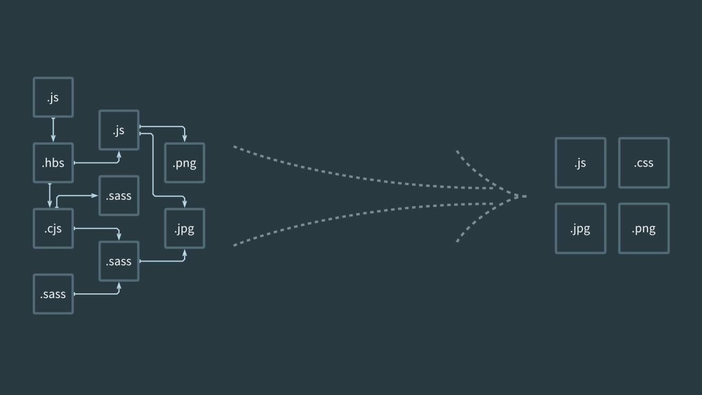
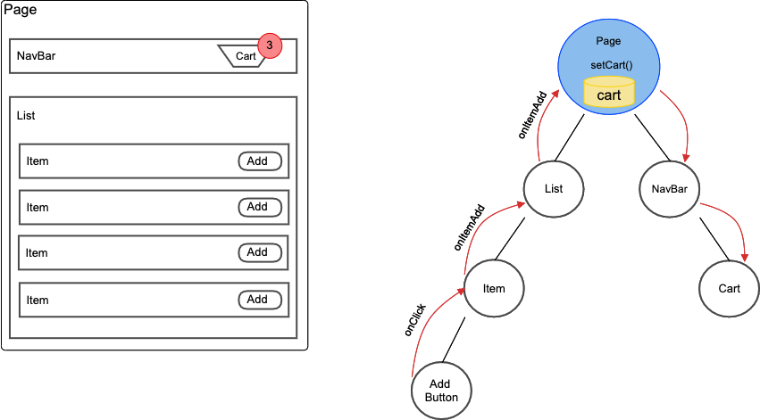
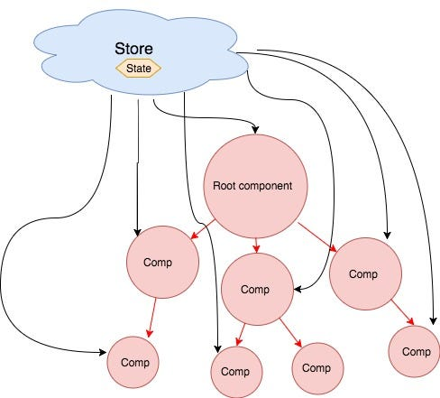

Course Overview
I welcome you to this new adventure of learning Front End Web Development.
Over the next 10 weeks, we will embark on an adventure of understanding JavaScript, CSS, and HTML. We will learn industry-standard frameworks for building Front End systems.
This course is mostly to you, Python developer that has knowledge of programming logic.
We will discover the main use cases, best practices, and techniques that will allow us to create beautiful, fast, and functional UIs (User Interfaces) for any web application.
Learning Outcomes
By the end of the course, you will be able to:
- Use a modern JS framework to build and deploy a complex web application
- Use advanced features of HTML, CSS, and JavaScript to build and debug features
- Measure, monitor, and take steps to improve the performance of a web application
- Plan, communicate, and work together on web application code
Instructor
- Emmanuel Orozco
Tools
In this course, we are using the following tools:
- GitHub is a website that hosts code. We'll use it as a place to keep our project and assignment code.
- GitHub Classroom is a tool for assigning projects on GitHub.
- VSCode is your code editor. It's where you'll write code to solve programming assignments.
- Node/npm installed in your computer.
Live Classes
If only textis not your preference, you can also check the following videos that explain week-to-week the materials of the course.
| Week | Topic | Video |
|---|---|---|
| 1 | JavaScript Review | Video |
| 2 | Development Best Practices | Video |
| 3 | Advanced JavaScript | Video |
| 4 | React Fundamentals | Video |
| 5 | Thinking in React | Video |
| 6 | Async JavaScript | Video |
| 7 | Routing & State Mgmt. | Video |
| 8 | Routing & State Mgmt. cont'd | Part 1, Part 2 |
| 9 | JWT, Auth, and React cont'd | Video |
| 10 | Project Q&A |
Core Reading
The following materials were key references when this course was developed. Students are encouraged to use these materials to supplement their understanding or to diver deeper into course topics throughout the term.
- Haverbeke, M. (2018) Eloquent JavaScript: A Modern Introduction to Programming
Supplemental Reading
This course references the following materials. Students are encouraged to use these materials to supplement their understanding or to diver deeper into course topics throughout the term.
YDKJS is a deep dive into how JS works under the hood. It helps you build a rich mental model for objects, references, functions, closures, scope, async, and a host of other topics. It can be challenging to read, but the effort pays off in a rich conceptual picture of JavaScript.
- Simpson, K. (2022) You Don’t Know JS Yet (2nd Edition)
JavaScript Review
Welcome to Week 1: Javascript Intro
Welcome to the JavaScript Intro week! This course is designed to help you solidify your front end knowledge, with a focus on core JavaScript language.
This week you'll start with a deep dive into the basic principles of JavaScript: variables, conditionals, loops, functions, and complex data structures.
You'll then explore the DOM, learning how to select, update, insert, and delete elements, allowing you to create dynamic and interactive web pages.
Finally, you'll learn about JavaScript events and discover how to make your applications responsive and user-friendly.

Learning Outcomes
After this week, you will be able to:
- Understand the basic syntax, variables, data types, and control structures in JavaScript.
- Manipulate and traverse DOM elements in JavaScript.
- Register and handle different types of browser events using JavaScript.
- Develop a basic interactive web application using pure JavaScript and DOM manipulation.
- Demonstrate a clear understanding of loops, conditionals, and functions in JavaScript.
The course is designed to be hands-on, with plenty of exercises to reinforce your learning and a project at the end to put what you've learned into practice. Happy learning!
Introduction
Let's start by distinguishing between these three languages, how they look like, and what they do.
What are HTML, CSS, and JS?

So in summary:
- HTML gives structure to a website. (like what would be the order of an element)
- CSS makes it pretty (like the color of my elements)
- JS makes it interactive (what happens if I click a button)
Why Learn JavaScript?
Although this course is focused on web applications, many of the principles can be used for other platforms. JavaScript is a very powerful programming language that, with the right tools, could allow you to create mobile apps, desktop apps, program robots or create powerful back ends.
Not to mention it's one of the most demanded programming languages for professional job opportunities and it's easy-to-learn syntax, it was the obvious choice when choosing a programming language for writing web applications. Even with interesting alternatives like Dart or Web Assembly, JavaScript is still the number one choice for everything related to front end programming.
Can I Use My Python knowledge in JavaScript
Yes, in the next lessons, we will cover the basics of javascript, but keep the following page bookmarked, because many of the concepts we will see, probably you've already seen while learning Python.
1. Data Types (primitives)
| Python Concept | Python Example | JavaScript Concept | JavaScript Example |
|---|---|---|---|
| Integer | x = 5 | Number | let x = 5; |
| Float | y = 3.14 | Number | let y = 3.14; |
| String | s = 'hello' | String | let s = 'hello'; |
| Boolean | b = True | Boolean | let b = true; |
2. Data operations
| Python Concept | Python Example | JavaScript Concept | JavaScript Example |
|---|---|---|---|
| Addition | result = x + y | Addition | let result = x + y; |
| Subtraction | result = x - y | Subtraction | let result = x - y; |
| Multiplication | result = x * y | Multiplication | let result = x * y; |
| Division | result = x / y | Division | let result = x / y; |
3. Variables
| Python Concept | Python Example | JavaScript Concept | JavaScript Example |
|---|---|---|---|
| Variable assignment | x = 10 | Variable assignment | let x = 10; |
| Constants | X = 10 | Constants | const X = 10; |
4. Conditionals
| Python Concept | Python Example | JavaScript Concept | JavaScript Example |
|---|---|---|---|
| If-else | if x > 0: print("Positive") | If-else | if (x > 0) { console.log("Positive"); } |
| else: print("Non-positive") | else { console.log("Non-positive"); } |
5. Loops
| Python Concept | Python Example | JavaScript Concept | JavaScript Example |
|---|---|---|---|
| For loop | for i in range(3): print(i) | For loop | for (let i = 0; i < 3; i++) { console.log(i); } |
| While loop | while x > 0: x -= 1 | While loop | while (x > 0) { x--; } |
6. Functions
| Python Concept | Python Example | JavaScript Concept | JavaScript Example |
|---|---|---|---|
| Function definition | def func(): return "Hello" | Function definition | function func() { return "Hello"; } |
7. Data structures (Array, objects)
| Python Concept | Python Example | JavaScript Concept | JavaScript Example |
|---|---|---|---|
| List (Array) | my_list = [1, 2, 3] | Array | let myArray = [1, 2, 3]; |
| Dictionary (Object) | my_dict = {"key": "value"} | Object | let myObject = {"key": "value"}; |
| List of Dictionaries | my_list = [{"key1": "value1"}, {"key2": "value2"}] | Array of Objects | let myArray = [{"key1": "value1"}, {"key2": "value2"}]; |
8. Built-in methods for strings
| Python Concept | Python Example | JavaScript Concept | JavaScript Example |
|---|---|---|---|
| String length | length = len(s) | String length | let length = s.length; |
| String concatenation | combined = s1 + s2 | String concatenation | let combined = s1 + s2; |
| String find | index = s.find('llo') | String indexOf | let index = s.indexOf('llo'); |
9. Built-in methods for arrays
| Python Concept | Python Example | JavaScript Concept | JavaScript Example |
|---|---|---|---|
| Append to array | my_list.append(4) | Push to array | myArray.push(4); |
| Remove from array | my_list.remove(2) | Splice from array | myArray.splice(myArray.indexOf(2), 1); |
| Array length | length = len(my_list) | Array length | let length = myArray.length; |
| Access array element | element = my_list[0] | Access array element | let element = myArray[0]; |
| Sort array | my_list.sort() | Sort array | myArray.sort(); |
| Reverse array | my_list.reverse() | Reverse array | myArray.reverse(); |
Topics to Review
- HTML (Web Foundations)
- CSS (Web Foundations)
- Figma (Project Management & Design)
- UI Design (Project Management & Design)
JavaScript Introduction
Welcome to our section on JavaScript basics. JavaScript is a key language for web development, and understanding its core concepts is important if you want to build websites or web apps.
In this section, we'll start by looking at basic data types like numbers, strings, and more. We'll see how we can do different things with these data types, such as adding numbers or combining strings.
Next, we'll learn about variables. Think of them as small boxes where we can store our data. We'll also do some exercises on this topic to get hands-on practice.
After that, we'll go into how we can use conditionals and loops to control what our code does and how many times it does it. We'll then see how functions let us group code together to use again and again.
We'll also talk about some more complex ways to store data using arrays and objects.
Finally, we'll have a quick chat about different versions of JavaScript, like ES6 and ES2015. We'll wrap up with some questions to test what you've learned. Let's dive in!
Information Type and Operations
Learning objectives
- Understand what is meant by values in JavaScript.
- Learn about the different data types in JavaScript.
- Learn how to combine and transform values with operators in JavaScript.
Data type
Computers handle billions of bits. To make it easier to manage large amounts of bits, we can divide them into "pieces" that represent pieces of information. In a JavaScript environment, these pieces are called values. Each value has a data type that determines its role. In JavaScript, there are five (5) primitive data types:
numberstring(text).booleanundefinednull
These values are called primitives because they allow the creation of other values. i.e if you add 2 numbers, you get a new number. But what happens if you add two strings?
ü§î
Worth mentioning that every programming language has its primitives. Python has 4. Java has 8. They allow us to organize information and determine how the program should run. In this lesson, you will learn how to define and manipulate these types of data.
We are going to make operations with these primitive values to create new information. Adding a number. Organizing a text, etc
1. Numbers
Values of type number are, unsurprisingly, numerical values. That is, pieces of data that represent numerical information are represented with the number type. This includes positive and negative numbers, integers, and decimals. In addition, the number data type has three symbolic values: +Infinity, -Infinity, and NaN (not-a-number).
Let's see several examples. Open your console (remember writing node in your terminal) and write the following numbers. As you do so, the console returns the number to you.
13// returns:
13-9.81// retorna: -9.81
Arithmetic Operators
The main operation done with numbers is arithmetic operations. Let's continue exploring the behavior of the number data type in your console. Write the following example in your console and confirm that you get the same result:
100 + 4 * 11// returns: 144
The + and * symbols are also called operators. The first represents addition and the second represents multiplication. When you put an operator between two values, the operation is applied to those values and produces a new value. As you can see, multiplication happens first. But like in math, you can change this by enclosing the addition in parentheses.
(100 + 4) * 11// returns: 1144
For subtraction, there is the - operator, and division can be done with the / operator. Let's see more examples (remember to try them in your console too!):
12345 / 250// returns: 49.38
57 * 3 - 31 / 4 // returns: 163.25
100 / -0 // returns: -Infinity
1000 * Infinity// returns: Infinity
0/0 // returns: NaN
Infinity - Infinity// returns: NaN
There is also one more arithmetic operator that you might not immediately recognize. The % symbol is used to represent the remainder operation. X % Y results in the remainder of dividing X by Y. For example, 314 % 100 produces 14 (because 100 times 3 plus 14 equals 314), and 144 % 12 gives 0 (because 12 times 12 plus 0 equals 144). You will often see this operator referred to as modulo, although technically remainder is more accurate.
5 % 3// returns: 27 % 2// returns: 1
2. Strings
The next basic data type is String, which refers to a string of characters and is used to represent text. They are declared by placing the content between quotes.
Open your console and type the following:
'Hola, my name is Luke'// returns: "Hola, my name is Luke"
'I am a web developer'// returns: "I am a web developer"
"123"// returns: "123"
Both single and double quotes can be used to declare strings, as long as they match at the beginning and end.
Pro tip:
We can use both single (') and double (") quotes to delimit our strings, but conventionally, in each project we choose to use either one or the other and try to be consistent. This helps with the clarity and maintainability of the code in the long run. In our case, we will choose single quotes from here on.
Text strings cannot be divided numerically, multiplied, or subtracted, but the + character can be used on them. It does not add, but concatenates; it joins two strings. The following line produces the string "concatenate":
'cats' + 'up' + ' ' + 'yomi'// returns: "catsup yomi"
// note the empty space that it is also a string in the 3rd position
Be careful mixing operations between numbers and strings. For example, multiplying a number by a string results in NaN.
'hola' * 3// returns: NaN
3. Booleans
Often, you will need a value that simply distinguishes between two possibilities, such as "yes" and "no" or "on" and "off". For this, JavaScript has a boolean data type, which has only two values: true and false.
Comparison Operators
Perform the following comparison in your console:
3 > 2// returns: true
2 > 3// returns: false
typeof (3 > 2)// returns: "boolean"
typeof (2 > 3)// returns: "boolean"
5 == 5 // returns: true
typeof is an special command of Javascriot that will tell you what data type you have i.e typeof "hello”, will return string
Difference between == and ===
== and === are comparison operators, and they have a fundamental difference in the way they compare two values.
- Double Equals (==): This is a loose equality comparison operator in JavaScript. It compares two values for equality, after performing any necessary type conversions. This means that if you are comparing a number and a string, JavaScript will attempt to convert the string to a number before making the comparison.
For example:
console.log(5 == "5"); // true, because "5" is coerced to the number 5
console.log(true == 1); // true, because true is coerced to the number 1
- Triple Equals (===): This is a strict equality comparison operator in JavaScript. It compares two values for equality, without performing any type conversion. If the types of the two values are different, it will always return
false.
For example:
console.log(5 === "5"); // false, because no type coercion is done
console.log(true === 1); // false, because true (boolean) is not the same type as 1 (number)
In general, it's a good practice to use === in JavaScript, because it avoids strange bugs that can occur due to unexpected type conversion.
Strings can be compared in the same way.
"Aardvark" < "Zoroaster"// returns: true
The way strings are ordered is more or less alphabetically: uppercase letters are always "less than" lowercase letters, so 'Z' < 'a' is true, and non-alphabetic characters (!, -, and so on) are also included in the ordering. The actual comparison is based on the Unicode standard.
'Zeyla' < 'ana'// returns: true
'Zeyla' < '!na'// returns: false
Other similar operators are >= (greater than or equal to), <= (less than or equal to), == (equal to), and != (not equal to).
'Itchy' == 'Itchy'// returns: true
'Itchy' != 'Scratchy'// returns: true
5 == 5// returns: true
10 != 'diez'// returns: true
The intention of NaN is to represent the result of a nonsensical calculation and as such, is not equal to the result of any other nonsensical calculation.
Logical Operators
There are also some operations that can be applied to Booleans. JavaScript supports three logical operators: and, or, and not. These can be used to "reason" with Booleans.
The && operator represents the and logical operation. It is a binary operator, and its result is true only if both given values are true. The || operator denotes the or logical operation. It returns true if either of the two given values are true. Not (Negation) is written as an exclamation point !. It is a binary operator that flips the value it is given; !true produces false and !false produces true. Let's see some examples:
true && true// returns: true
true && false// returns: false
false && false// returns: false
true || true// returns: true
true || false// returns: true
!true// returns: false
!false// returns: true
The last logical operator you will learn is not unary or binary, but ternary and operates on three values. This is written with a question mark and a colon, like this:
true ? 1 : 2// returns: 1
false ? 1 : 2// returns: 2
This is called the conditional operator (or sometimes the ternary operator since it is the only operator of its kind in the language). The value to the left of the question mark "chooses" which of the other two values will result. When it is true, the middle value is chosen, and when it is false, the value to the right is the result.
4. Null and Undefined
There are two special values, null and undefined, which are used to denote the absence of a significant value. They are values themselves, but they do not have any information. Many operations in the language that do not produce a meaningful value (you will see this later) produce undefined simply because they have to produce some value.
The difference in meaning between undefined and null is a JavaScript design accident and does not matter most of the time.
Understanding the difference between undefined and null (yes, there is a semantic difference) is important, and easier than it seems. Both values denote the absence of a value, but in one case, we could say that it is intentional (null), and in the other, it is not (undefined).
The value undefined means that a value has not been assigned, as opposed to null, which means that we have assigned a null value. This can be very useful for differentiating states in asynchronous operations, ... it is common for undefined to mean that the operation has not yet been completed, while null means that it has completed but returned a null value.
Variables
As a Python developer, you're already familiar with the concept of variables - named containers that store data or values. In JavaScript, the principle is the same, but there are differences in syntax and behavior that we'll examine in this article.
Declaring Variables
In Python, you declare a variable by simply assigning it a value, like so:
x = 10
In JavaScript, we have three keywords for declaring variables: var, let, and const.
var x = 10;
let y = 20;
const z = 30;
Note the semicolon at the end of each statement. While not strictly necessary in JavaScript, it's generally good practice to use them to avoid potential issues.
Var, Let, and Const
Now, you may be wondering about the difference between var, let, and const. Here's a brief overview:
- var: This is the oldest way to declare variables in JavaScript. Variables declared with
varare function-scoped, meaning they are only available within the function they're declared in. If declared outside a function, they are globally scoped. They can also be redeclared and updated.
var a = 10;
var a = 20; // This is allowed
- let: Introduced in ES6,
letprovides block scoping. Variables declared withletare only available within the block they're declared in. They can't be redeclared within the same scope, but they can be updated.
let b = 10;
let b = 20; // This will throw an error
b = 20; // But this is allowed
- const: Also introduced in ES6,
conststands for constant.constvariables must be initialized during declaration and can't be updated or redeclared.
const c = 10;
c = 20; // This will throw an error
Hoisting
An important difference between JavaScript and Python is the concept of hoisting. In JavaScript, variable and function declarations are moved to the top of their containing scope during the compile phase. This means that you can use a variable before it's declared.
f = 10;
var f; // No error - 'f' is hoisted to the top of the scope
However, only the declarations are hoisted, not the initializations. This can lead to unexpected results:
console.log(g); // undefined
var g = 10;
In this example, g is hoisted and declared at the top of the scope, but it's not initialized until the assignment statement. So, the value of g is undefined when it's logged.
In conclusion, while JavaScript's variable declaration and handling may seem different from Python's, they both follow logical rules that can be easily understood with a bit of practice. The keywords var, let, and const each have their place in a developer's toolkit, giving you options to define the scope and mutability of your variables as needed.
Scope in JavaScript
Let's dive deeper into the concept of variable scope in JavaScript. Unlike Python, where indentation determines a block, JavaScript uses {} to create a new block. Variables declared with let and const are block-scoped, meaning they exist only within the block where they are defined.
{
let blockScoped = "Hello";
const alsoBlockScoped = "World";
}
console.log(blockScoped); // Error: blockScoped is not defined
console.log(alsoBlockScoped); // Error: alsoBlockScoped is not defined
On the other hand, var variables are function-scoped, as mentioned before. If a var variable is declared outside any function, it becomes globally scoped and can be accessed anywhere in your code, which can potentially lead to issues.
var functionScoped = "Hello";
function logVar() {
console.log(functionScoped); // "Hello"
}
logVar();
In conclusion, transitioning from Python to JavaScript when dealing with variables may take some practice. However, once you understand the different behaviors and scopes associated with var, let, and const, you'll be able to write more flexible and robust code in JavaScript.
Remember, the differences aren't bad – they're simply different tools in your toolkit, each with their best use-cases. Happy coding!
Exercises: Variable Types and Operations
They are available here
Solve the exercises in the folder 01-variable-types-operators-conditionals only.
Conditionals
As a Python developer, you're already familiar with conditional statements – blocks of code that run based on whether certain conditions are true or false. The concept in JavaScript remains the same, but with a few key differences that we'll discuss in this article.
The if Statement
The if statement in JavaScript functions similarly to Python. Here's a side-by-side comparison:
Python:
x = 10
if x > 5:
print("x is greater than 5")
JavaScript:
let x = 10;
if (x > 5) {
console.log("x is greater than 5");
}
The syntax in JavaScript requires parentheses around the condition, unlike Python. Also, you'll notice that JavaScript uses curly braces {} to denote the block of code associated with the condition, and the line ends with a semicolon.
else and else if
Just like Python, JavaScript has else and else if clauses. These work very similarly to their Python counterparts.
Python:
x = 10
if x > 10:
print("x is greater than 10")
elif x == 10:
print("x is exactly 10")
else:
print("x is less than 10")
JavaScript:
let x = 10;
if (x > 10) {
console.log("x is greater than 10");
} else if (x === 10) {
console.log("x is exactly 10");
} else {
console.log("x is less than 10");
}
Note that elif in Python is equivalent to else if in JavaScript. Also, == in JavaScript performs type coercion and checks for equality of value, but not type. The === operator checks for equality of both value and type.
Switch Case
JavaScript has a switch statement, which is used to perform different actions based on different conditions. Python doesn't have a built-in switch case statement, and it is often simulated using if..elif..else chains or dictionaries.
Here's a simple example of a switch statement in JavaScript:
let fruit = "Apple";
switch(fruit) {
case "Apple":
console.log("Red");
break;
case "Banana":
console.log("Yellow");
break;
default:
console.log("Unknown fruit");
}
The switch statement evaluates an expression and checks it against different case values. If there's a match, the corresponding block of code is executed. The break keyword is used to exit the switch case. Without it, the program will continue to the next case, causing potentially unwanted behavior. The default keyword specifies code to run if there's no match.
Truthy and Falsy Values
In JavaScript, all values have an inherent boolean truthiness or falsiness. This differs from Python, which has a specific set of rules for what evaluates to True or False.
In JavaScript, the falsy values are false, 0, "" (empty string), null, undefined, and NaN. Everything else is truthy.
This is important to understand because it impacts how conditions are evaluated in JavaScript. For example:
let name = "";
if (name) {
console.log("Hello, " + name);
} else {
console.log("No name provided");
}
In this example, if name is an empty string, the message "No name provided" will be logged to the console.
Ternary Operator
JavaScript, like Python, has a ternary operator for handling simple conditional logic in a concise way. Here's a comparison:
Python:
x = 10
message = "x is 10" if x == 10 else "x is not 10"
JavaScript:
let x = 10;
let message = x === 10 ? "x is 10" : "x is not 10";
The syntax is slightly different, but the concept is the same: evaluate a condition and return one value if it's true, and another value if it's false.
Loops
In Python, you're likely familiar with loops, structures that allow you to repeat blocks of code. JavaScript also employs loops with a similar purpose but different syntax and behavior. In this article, we'll explore the various types of loops in JavaScript, comparing them to their Python equivalents.
For Loop
The for loop is a common type of loop in JavaScript, with similar semantics to Python but different syntax.
Python:
for i in range(5):
print(i)
JavaScript:
for (let i = 0; i < 5; i++) {
console.log(i);
}
In JavaScript, the for loop has three components within the parentheses: the initialization (usually of the loop counter), the condition (which, while true, allows the loop to continue), and the final expression (usually incrementing the counter).
While Loop
The while loop in JavaScript is quite similar to Python.
Python:
i = 0
while i < 5:
print(i)
i += 1
JavaScript:
let i = 0;
while (i < 5) {
console.log(i);
i++;
}
The while loop continues to run as long as the condition in parentheses is true. Note that JavaScript uses ++ for incrementing a variable, though += is also valid.
Do...While Loop
The do...while loop is unique to JavaScript and doesn't have a direct equivalent in Python. This loop will execute the block of code once and then continue to repeat the loop as long as the condition is true.
JavaScript:
let i = 0;
do {
console.log(i);
i++;
} while (i < 5);
In this example, even if i starts greater than 5, the block of code inside the do loop will still run once.
For...In Loop and For...Of Loop
In JavaScript, there are two additional loop structures, for...in and for...of, which are somewhat similar to Python's for loop when used with collections.
The for...in loop is used to iterate over the enumerable properties of an object:
let obj = {a: 1, b: 2, c: 3};
for (let prop in obj) {
console.log(prop + ": " + obj[prop]);
}
This loop will print the name and value of each property in the object.
The for...of loop is used to iterate over iterable objects, like arrays or strings:
let arr = [1, 2, 3, 4, 5];
for (let value of arr) {
console.log(value);
}
This loop will print each value in the array. Note that for...of cannot be used with regular objects because they are not iterable.
Functions
If you're coming from a Python background, you're likely already familiar with the concept of functions - reusable blocks of code designed to perform a certain task. JavaScript functions operate on the same principle but with some differences in terms of syntax and behavior. Let's delve into it.
Function Declaration
In JavaScript, a function can be declared using the function keyword:
function greet() {
console.log("Hello, world!");
}
To call this function, you would use greet().
This is equivalent to the following Python code:
def greet():
print("Hello, world!")
And similarly, you'd call it using greet().
Parameters and Arguments
Like Python, JavaScript functions can take parameters and be called with arguments. However, JavaScript is more lenient with argument count mismatch:
function greet(name) {
console.log("Hello, " + name);
}
greet("Alice");
greet(); // This is allowed in JavaScript
In this case, calling greet() with no arguments logs "Hello, undefined".
Return Values
JavaScript functions, like their Python counterparts, can return a value using the return statement:
function add(x, y) {
return x + y;
}
let sum = add(5, 3);
console.log(sum); // 8
If a JavaScript function doesn't have a
returnstatement, it returnsundefined.
Function Expressions
JavaScript has a concept called function expressions, where a function is assigned to a variable:
let greet = function(name) {
console.log("Hello, " + name);
};
greet("Alice");
Function expressions can be anonymous (function without name), as seen above, or named (function with name).
Arrow Functions
Introduced in ES6, arrow functions provide a more compact syntax for function expressions:
let greet = (name) => {
console.log("Hello, " + name);
};
greet("Alice");
If there's only one parameter, you can omit the parentheses:
let greet = name => {
console.log("Hello, " + name);
};
If the function body only contains one statement, you can omit the curly braces and the return keyword:
let add = (x, y) => x + y;
let sum = add(5, 3);
console.log(sum); // 8
Callback Functions
JavaScript heavily uses callback functions, which are functions passed as arguments to other functions. Callbacks are often used in event handling and asynchronous operations.
function greet(callback) {
console.log("Hello, world!");
callback();
}
greet(function() {
console.log("This runs after the greet function.");
});
// logs:
// Hello, world!
// This runs after the greet function.
Closure
JavaScript functions create their own scope for variables – they can access their own local variables, variables from their parent (enclosing) scope, and global variables. This capability to remember and access its lexical scope even when the function is executing outside its lexical scope is known as closure.
function makeGreetingFunction(name) {
let message = "Hello, " + name + "!";
return function() {
console.log(message);
};
}
let greetAlice = makeGreetingFunction("Alice");
greetAlice(); // "Hello, Alice!"
If it's a bit abstract, this video might be helpful, to elaborate what a closure is and how to use it.
Complex Data Structures Array Objects
If you are a Python developer looking to understand JavaScript, you likely know about Lists of Dictionaries. In JavaScript, an equivalent construct is the Array of Objects. Let's delve into this topic.
Arrays in JavaScript
An Array is a global object in JavaScript which is used to store multiple values in a single variable. You can create an array in JavaScript by enclosing a comma-separated list of values in square brackets [].
let fruits = ['Apple', 'Banana', 'Cherry'];
Arrays in JavaScript can contain any data type, and the data types can be mixed. This includes objects.
Objects in JavaScript
An object in JavaScript is similar to a dictionary in Python. It contains key-value pairs and is denoted by curly braces {}.
let student = {
name: 'Alice',
age: 22,
course: 'Computer Science'
};
In this example, name, age, and course are the keys, and 'Alice', 22, and 'Computer Science' are their respective values.
Arrays of Objects
An array of objects is simply an array where its elements are objects. Here's an example:
let students = [
{
name: 'Alice',
age: 22,
course: 'Computer Science'
},
{
name: 'Bob',
age: 24,
course: 'Physics'
}
];
In this case, students is an array that contains two objects.
Accessing Data in Arrays of Objects
You can access data in arrays of objects by specifying the index of the object in the array, followed by the key of the value you want to access. For example, to access Bob's age:
let bobAge = students[1].age; // 24
This is analogous to accessing elements in a list of dictionaries in Python.
Modifying Data in Arrays of Objects
You can modify the data in an object within an array by assigning a new value to the specific key:
students[1].age = 25; // Bob is now 25
Adding and Removing Elements
Adding a new object to the array can be done using the push() method:
students.push({
name: 'Charlie',
age: 23,
course: 'Mathematics'
});
Removing an object from the array can be achieved using the splice() method. For instance, to remove Bob from the array:
students.splice(1, 1);
Iterating Over an Array of Objects
You can use a for loop or the forEach() method to iterate over an array of objects:
for (let i = 0; i < students.length; i++) {
console.log(students[i].name);
}
// or
students.forEach(student => {
console.log(student.name);
});
Exercises: Loop Conditionals & Functions
Since you've already accepted the assignment on GitHub Classroom, you just need to do the exercises in the folder called: 02-loops-data-structures
Bonus: Clarifying ES6, ES2015, etc.
In your JavaScript learning journey, you've probably seen ES5, ES6, ES2015. It's hard to get lost on all those concepts, so let's explain what they mean:
JavaScript's development has been guided by a series of standards (and improvements) called ECMAScript (ES). Understanding the evolution of these standards can give us a deeper appreciation for the language as it exists today.
ES1 (1997)
ECMAScript 1 was the first version of the standard, released in June 1997, about a year and a half after JavaScript's initial creation. This standard was vital in that it codified JavaScript's syntax and semantics, ensuring that the nascent web would have a single scripting language that worked consistently across different browsers and platforms.
ES2 (1998)
The second edition of ECMAScript was a minor editorial revision to align with an ISO standard for the language. There were no new features or significant changes in ES2 compared to ES1. This standard was published in June 1998.
ES3 (1999)
ES3 brought significant enhancements to the language, including error handling with try/catch, better error definition, and formatted numeric output. It laid much of the foundation for JavaScript as we know it today.
ES4 (Abandoned)
ES4 was planned as a substantial overhaul of JavaScript with new features and changes. However, disagreements within the ECMAScript community about the language's future direction led to this version being abandoned.
ES5 (2009)
After a ten-year hiatus, ES5 was released with several critical additions:
- "Strict Mode": An opt-in mode that tightens the language's rules to catch more errors during development.
- Accessor properties: Getters and setters for object properties.
- Array methods: New ways to manipulate arrays, such as
map,filter,reduce, andforEach. - JSON support: Native parsing and stringifying for JSON data.
ES6 / ES2015 (2015)
This significant update to the language introduced many features that reshaped JavaScript programming:
letandconst: Block-scoped alternatives tovar.- Arrow functions: A new function syntax with lexical
this. - Classes: A new syntax for creating objects and dealing with inheritance.
- .. many more
ES2016 / ES7 (2016) to ES2021 / ES12 (2021)
Starting with ES2016, the ECMAScript standard moved to an annual release schedule. Each new version includes a set of carefully considered features, steadily improving the language while avoiding the significant disruptions of an overhaul like ES6.
JavaScript's evolution is a testament to its vibrant and active developer community. With each new version, the language becomes more powerful, versatile, and enjoyable to work with, ensuring its continued relevance in the world of web development.
JavaScript Questions
The following questions can be used as a guide to direct your learning. They are not mandatory
Variables
- How do you declare a variable in JavaScript?
- What's the difference between
var,let, andconst? - What are the rules for naming variables in JavaScript?
- Can you declare a variable without a value in JavaScript?
- What's the scope of a variable declared with
var? - What's the scope of a variable declared with
letorconst? - What's hoisting in JavaScript?
- What happens when you try to use a variable that hasn't been declared?
- How do you change the value of a variable in JavaScript?
- Can you change the value of a
constvariable?
Conditionals
- What's the syntax for an
ifstatement in JavaScript? - How do you add an 'else' clause to an
ifstatement? - How do you chain multiple conditions together using
else if? - What's the difference between
==and===in conditionals? - How does JavaScript handle truthy and falsy values in conditionals?
- What's the syntax for a
switchstatement in JavaScript? - Can a
switchstatement handle multiple cases with the same code block? - How do you ensure a
switchstatement doesn't fall through to the next case? - What's a ternary operator and how does it work?
- Can you use nested conditionals in JavaScript? How?
Loops
- What's the syntax for a
forloop in JavaScript? - What's the syntax for a
whileloop? - What's the syntax for a
do...whileloop and how does it differ from a regularwhileloop? - How do you break out of a loop early?
- How do you skip an iteration in a loop?
- How do you loop over an array using a
for...ofloop? - What's the difference between a
for...inloop and afor...ofloop? - How can you determine the index of the current element in a
for...ofloop? - What happens when you modify the array during a
for...ofloop? - Can you use nested loops in JavaScript? How?
Functions
- What's the syntax for declaring a function in JavaScript?
- What's the difference between a function declaration and a function expression?
- What's an arrow function and how does it differ from a regular function?
- How do you call a function in JavaScript?
- Can a function return a value? How?
- Can a function take parameters? How?
- What's the difference between parameters and arguments in a function?
- How does JavaScript handle default parameters?
- How does JavaScript handle extra arguments passed to a function?
- What's a callback function?
Array of Objects
- How do you declare an array of objects in JavaScript?
- How do you access a specific object in an array?
- How do you access a property of an object in an array?
- How do you change the value of an object's property in an array?
- How do you add a new object to an array?
- How do you remove an object from an array?
- How do you loop over an array of objects?
- How do you find an object in an array based on a property value?
- How do you sort an array of objects based on a property value?
- How do you filter an array of objects based on a property value?
Document Object Model (DOM)
Welcome to our exploration of the DOM! Now, as we dive deeper into web development, it's crucial to understand what the DOM is and how we interact with it.
First, we'll discuss the concept of the DOM itself, giving you a clear picture of its role in web pages. Next, we'll delve into the different types of nodes or elements that make up the DOM.
Once we have a foundational understanding, we'll move into more hands-on topics: how to select specific elements, how to update them to display new content or styles, and methods to add or remove elements on the page.
By the end of this section, through exercises and examples, you'll gain practical experience manipulating the DOM and enhancing user interaction on web pages. We'll finish with some questions to consolidate your learning. Get ready for a fun dive into one of the core aspects of web interactivity!
What is the DOM?
If you've ever built a web page or used JavaScript to create dynamic, interactive web content, you've likely encountered the Document Object Model (DOM). Understanding the DOM is crucial for anyone looking to harness the full power of JavaScript in their web applications.
The Document Object Model (DOM) is a programming interface for HTML and XML documents. It represents the structure of a document and enables programming languages to manipulate the content and structure of a web document.
In essence, the DOM transforms your HTML document into an object-oriented tree structure with elements such as <body>, <header>, <div>, and <p> becoming nodes on the tree. This tree-like structure is often referred to as the "DOM Tree".
The Structure of the DOM
The DOM represents an HTML or XML document as a logical tree structure, with each element, attribute, and piece of text in the document becoming a node in this tree.
At the top of this tree is the Document node. From here, the structure follows the nesting of the markup, with child nodes stemming from their corresponding parent elements.
For example, the DOM representation of the following HTML code:
<!DOCTYPE html>
<html>
<head>
<title>My First Web Page</title>
</head>
<body>
<h1>Hello, World!</h1>
<p>Welcome to my first web page.</p>
</body>
</html>
would look something like this:
Document
|
|- DOCTYPE: html
|- html
|
|- head
| |
| |- title
| |
| |- #text: My First Web Page
|
|- body
|
|- h1
| |
| |- #text: Hello, World!
|
|- p
|
|- #text: Welcome to my first web page.
Or visually:

Working with the DOM
Web browsers create the DOM automatically upon loading a web page, and JavaScript (or other scripting languages) can interact with the DOM to dynamically change the document's structure, style, and content.
Some common tasks include:
- Changing the content of HTML elements: You can select any HTML element and change its content using JavaScript.
- Adding and deleting HTML elements: You can create new elements, append them to existing elements, or remove existing elements and attributes.
- Changing CSS styles: You can select HTML elements and modify their CSS styles.
- Reacting to HTML events: You can assign functions to event handlers on HTML elements, allowing your JavaScript code to react to user interactions like clicks, mouse movements, keyboard input, and more.
For example, to change the text of the first <p> element in the document, you could use the following JavaScript code:
document.querySelector('p').textContent = 'New text for the first paragraph.';
If you need it, this video, explains incredibly well what is the DOM and how it can be queried.
Node Types
When working with the Document Object Model (DOM), you will encounter various types of nodes that make up the structure of a webpage. Each type of node plays a unique role within the DOM and offers different functionality.
Common Node Types
The DOM consists of several types of nodes. The most commonly used ones are:
- Document Node: The root node of the HTML document. It represents the entire document and it's typically interacted with using the
documentobject. - Element Nodes: These are the most commonly used nodes and represent each HTML element on the page, such as
<body>,<div>,<p>, and so on. Element nodes can have attributes and can contain other element nodes, text nodes, and comments. They can be selected and manipulated using various DOM methods. - Text Nodes: These nodes contain the actual text content within an element node. Any text you see on a webpage, even the whitespace and line breaks, are stored in text nodes.
- Attribute Nodes: These nodes contain the values of HTML attributes. Attribute nodes are accessed and manipulated via their parent element nodes.
- Comment Nodes: These nodes represent HTML comments (
<!-- comment -->) in the document.
It's important to note that in the DOM, everything is a node and these nodes are organized in a tree-like structure. This structure enables JavaScript to access and update the content of a webpage.
Selecting Elements
Interacting with HTML elements is a crucial part of working with JavaScript and the Document Object Model (DOM). There are several methods available to select HTML elements, allowing you to manipulate their content, style, attributes, and more.
Selecting Elements by ID
Each HTML element can have a unique ID, and this ID can be used to select a specific element. The document.getElementById() method is used to select an element by its ID.
let element = document.getElementById('myId');
In this example, the element with the ID 'myId' is selected and stored in the variable element.
Selecting Elements by Class Name
HTML elements can also share a class name, which can be used to select multiple elements at once. The document.getElementsByClassName() method returns a live HTMLCollection of elements with the given class name.
let elements = document.getElementsByClassName('myClass');
In this example, all elements with the class 'myClass' are selected. You can then loop through elements to work with each element.
Selecting Elements by Tag Name
You can also select elements based on their tag name using the document.getElementsByTagName() method. This method also returns a live HTMLCollection of elements.
let elements = document.getElementsByTagName('p');
In this example, all <p> elements are selected.
Query Selectors
Query selectors offer a more flexible approach to selecting elements. The document.querySelector() method returns the first element that matches a specified CSS selector(s) in the document.
let element = document.querySelector('.myClass');
In this example, the first element with the class 'myClass' is selected.
If you want to select all elements that match a certain CSS selector(s), you can use the document.querySelectorAll() method. This method returns a static NodeList (it's like an array but not officially an array) representing all elements that match the specified group of selectors.
let elements = document.querySelectorAll('.myClass');
In this example, all elements with the class 'myClass' are selected.
Updating Elements
One of the key advantages of the Document Object Model (DOM) is the ability to modify HTML elements on a webpage using JavaScript. This allows us to make web pages interactive and dynamic. In this article, we'll explore several ways to update and modify DOM elements.
Changing Element Content
To change the text content of an HTML element, you can use the textContent property. This will change the content of the selected element and all its descendants.
let element = document.querySelector('p');
element.textContent = 'New paragraph text.';
In this example, the first <p> element on the page is selected, and its text content is changed.
Updating Attributes
HTML elements often have attributes, like class, id, href, and src, that can be updated. Use the setAttribute() method to change the value of an attribute:
let link = document.querySelector('a');
link.setAttribute('href', '<https://www.new-url.com>');
In this example, the first <a> element on the page is selected, and its href attribute is changed to '<https://www.new-url.com>'.
Adding and Removing Classes
To add or remove classes from an element, you can use the classList property, which provides methods like add(), remove(), and toggle().
let element = document.querySelector('div');
element.classList.add('new-class'); // adds 'new-class' to the element
element.classList.remove('old-class'); // removes 'old-class' from the element
element.classList.toggle('another-class'); // toggles 'another-class'
Changing CSS Styles
You can also change the CSS styles of an element using the style property:
let element = document.querySelector('div');
element.style.color = 'blue';
element.style.backgroundColor = 'yellow';
In this example, the first <div> element on the page is selected, and its text color and background color are changed.
Inserting Elements
Creating new HTML elements dynamically is a key part of building interactive web applications. The Document Object Model (DOM) provides methods that allow you to create, insert, and manipulate HTML elements on a webpage using JavaScript. Let's explore how to create new elements and add them to your webpage.
Creating New Elements
The document.createElement() method is used to create a new element. You pass in the tag name of the element you want to create as an argument.
let newDiv = document.createElement('div');
In this example, a new <div> element is created and stored in the variable newDiv. At this point, the new element exists in memory, but it's not yet added to the DOM.
Adding Text and Attributes to Elements
Before adding the new element to the DOM, you might want to add text content, attributes, or even other elements to it.
To add text content, use the textContent property:
newDiv.textContent = 'Hello, World!';
To add attributes, use the setAttribute() method:
newDiv.setAttribute('class', 'myClass');
In this example, a class named 'myClass' is added to the new <div> element.
Appending Elements to the DOM
Once you've created a new element and added content or attributes to it, you can then add it to the DOM. The appendChild() method is used to add a new child node to an existing element.
document.body.appendChild(newDiv);
In this example, the new <div> element is added to the body of the webpage as a child node.
Inserting Elements at Specific Positions
Sometimes, you may want to insert a new element at a specific position in the DOM, not just at the end. In such cases, you can use the insertBefore() method:
let parent = document.querySelector('div');
let child = parent.firstChild;
let newElement = document.createElement('p');
newElement.textContent = 'New paragraph';
parent.insertBefore(newElement, child);
In this example, a new <p> element is created and inserted as the first child of a <div> element, before the existing first child.
Deleting Elements
You may find the need to remove elements from the Document Object Model (DOM). Whether it's because a user action triggers the removal or it's part of your application's state changes, knowing how to properly remove elements is helpful, so let's explore:
Removing a Specific Element
To remove a specific element, you can use the remove() method. This method removes the element on which it's called:
let elementToRemove = document.querySelector('.remove-me');
elementToRemove.remove();
In this example, the element with the class 'remove-me' is selected and then removed from the DOM.
Removing Child Elements
If you want to remove a child element from a specific parent element, you can use the removeChild() method:
let parentElement = document.querySelector('.parent');
let childElement = document.querySelector('.child');
parentElement.removeChild(childElement);
In this example, the element with the class 'child' is removed from the parent element with the class 'parent'.
It's important to note that removeChild() is called on the parent node, not on the child node you want to remove.
Clearing All Child Elements
Sometimes, you might want to remove all child elements of a given parent element. You can do this by looping over the child elements and removing them one by one:
let parentElement = document.querySelector('.parent');
while (parentElement.firstChild) {
parentElement.removeChild(parentElement.firstChild);
}
In this example, all child elements of the element with the class 'parent' are removed. The while loop continues as long as parentElement has a firstChild, ensuring all child nodes are removed.
Exercises
The following exercises are not mandatory but they are highly recommended to help you internalize your learnings. (No need to be submitted on Gradescope).
-
What is the DOM?
-
Create an HTML page with various elements (e.g., headings, paragraphs, lists, images) and then open the Developer Tools in the browser to explore the DOM structure.
-
Use the following HTML skeleton, we've added some HTML elements so you can play with them.
<!DOCTYPE html> <html lang="en"> <head> <meta charset="UTF-8"> <meta name="viewport" content="width=device-width, initial-scale=1.0"> <title>My exercises</title> </head> <body> <button id="my_button">Change this background color</button> <h3>Groceries</h3> <ul id="list_container"> <li class="list_element">One</li> <li class="list_element">Two</li> <li class="list_element">Three</li> <li class="list_element">Four</li> </ul> <input type="text" id="new_element_text" /> <button>Add element</button> <img src="http://imagedummy.com" /> <button>Click me to change image</button> </body> <script> // your scripts go here </script> </html> -
-
Node Types
- Write a JavaScript function that accepts a DOM element as an argument and logs its node type and node name.
- Create a function that prints all the node types present in a given DOM tree.
-
Selecting Elements
- Select an element by its ID and change its background color.
- Select all elements with a particular class name and change their font style.
- Use
querySelectorandquerySelectorAllas well.
-
Updating Elements
- Create a function that changes the content of a specific element on the page.
- Write a script that updates the
srcattribute of an image element when a button is clicked. - Create a script that toggles the visibility of an element when a button is clicked.
-
Inserting Elements
- Write a script that adds a new list item to an unordered list when a button is clicked.
- Implement a script that adds a new row with input fields to a table.
-
Deleting Elements
- Create a script that deletes a table row when a "Delete" button inside the row is clicked.
- Implement a script that clears all the contents of a specific container element.
Questions About DOM
The following questions are not mandatory.
-
What is the DOM?**
- What does DOM stand for, and what is its purpose in web development?
- Explain the structure of the DOM.
- How does JavaScript interact with the DOM?
- What is the difference between the DOM and the HTML source code?
- What is a DOM node?
-
DOM Node Types**
- How many types of DOM nodes are there, and what are they?
- What is the difference between an Element node and an Attribute node?
- What is a Text node?
- What is the significance of the
nodeTypeproperty? - Describe the differences between
childNodes,firstChild, andlastChild.
-
Selecting Elements with the DOM**
- How do you select a DOM element by its ID?
- What is the difference between
getElementsByClassName()andquerySelectorAll()? - How do you select the first
<p>element in the document using a query selector? - What is returned by
document.getElementsByTagName('p')? - Can you select elements using CSS pseudo-classes with
querySelectorAll()? Give an example.
-
Updating/Modifying DOM Elements**
- How can you change the text content of an HTML element using JavaScript?
- How would you change the
hrefattribute of a<a>tag? - How can you add and remove classes from a DOM element?
- How do you change the CSS styles of an HTML element using JavaScript?
- How would you remove a specific HTML element from the page?
-
Creating Elements**
- How can you create a new
<div>element and add it to the DOM? - How would you add text content to a newly created element?
- How would you set the
classattribute of a new element? - How do you insert a new element as the first child of an existing element?
- How would you create a new
<p>element, add text content to it, and then append it to an existing<div>element?
- How can you create a new
-
Deleting Elements in the DOM**
- How can you delete a specific DOM element?
- How do you remove a child element from a specific parent element?
- How would you remove all child elements of a given parent element?
- What potential issues could arise from not properly managing references when removing elements?
- Can you still interact with a DOM element after it has been removed from the DOM? Why or why not?
Events
Let's switch gears and dive into another vital aspect of web development: browser events. Events are the bread and butter of interactivity on the web. They allow users to interact with web pages through actions like clicking, typing, dragging, and many more.
In this section, we'll kick things off by understanding what an event is in the context of web development. Then, we'll explore the variety of events available to us--believe me, there's an event for almost everything!
Additionally, when an event occurs, there's often a lot of information associated with it. We'll learn how to access and utilize this information.
By the end of this module, you'll be well-equipped to make your web pages come alive with user interactions. Let's dive in!
What is an Event
In the context of web development, interaction, and responsiveness are key elements of a compelling user experience. JavaScript events form the backbone of this interactive web by enabling your application to respond to user actions in real-time. This article explains why JavaScript events are crucial in web development and provides a few basic examples to illustrate their usage.
Making Websites Interactive
Without JavaScript events, websites would be static and unresponsive to user input. Events allow us to add interactivity to our sites, enhancing the user experience. When a user clicks a button, submits a form, moves the mouse, or even presses a key, an event is fired. By listening for these events, we can execute JavaScript code in response to user actions, making our websites interactive and responsive.
For example, let's create a simple event listener for a button-click event that displays "Hello, World!" in the console:
HTML:
<button id="myButton">Click me</button>
JavaScript:
document.getElementById('myButton').addEventListener('click', function() {
console.log('Hello, World!');
});
In this example, when the button is clicked, the anonymous function passed to addEventListener (JavaScript method to define events). is executed and "Hello, World!" is logged to the console.
User Feedback
Events provide immediate feedback to the user. For instance, when a user clicks a button to submit a form, an event listener can be set up to validate the form fields. If the validation fails, the event handler can display an error message. This immediate feedback improves the user experience by making the website more intuitive and user-friendly.
For example, suppose we want to validate a text input field and provide immediate feedback upon form submission:
HTML:
<form id="myForm">
<input type="text" id="name" placeholder="Enter your name" required>
<input type="submit" value="Submit">
</form>
<p id="message"></p>
JavaScript:
document.getElementById('myForm').addEventListener('submit', function(event) {
event.preventDefault(); // prevent form submission
let name = document.getElementById('name').value;
if(name === '') {
document.getElementById('message').textContent = 'Name is required!';
} else {
document.getElementById('message').textContent = `Hello, ${name}!`;
}
});
In this example, if the user tries to submit the form without entering a name, the message "Name is required!" is displayed. If a name is provided, a personalized greeting is displayed.
Types of Events
As we covered before, JavaScript is known for its capability to create interactive and dynamic web applications. This dynamism largely depends on the events JavaScript can listen for and respond to. Events are actions or occurrences that happen in the browser. JavaScript provides a plethora of event types that cater to a myriad of user interactions. This article will discuss several common event types.
Mouse Events
Mouse events are triggered by user interactions with a mouse or similar input device.
click: Fired when the user clicks an element.dblclick: Fired when the user double-clicks an element.mousemove: Fired when the mouse pointer is moved within an element.mousedownandmouseup: Fired when a mouse button is pressed and then released.mouseoverandmouseout: Fired when the mouse pointer enters and leaves an element.mouseenterandmouseleave: Similar tomouseoverandmouseout, but do not bubble and are not triggered when the mouse pointer hovers over a child element.
Keyboard Events
Keyboard events are triggered by user interactions with the keyboard.
keydown: Fired when a key is pressed down.keyup: Fired when a key is released.keypress: Fired when a key that produces a character value is pressed down.
Form Events
Form events are triggered by user interactions with form elements.
submit: Fired when a form is submitted.change: Fired when the value of an element has been changed.input: Fired when the user inputs data into an<input>,<textarea>, or<select>element.focus: Fired when an element gets focus.blur: Fired when an element loses focus.
Window Events
Window events are triggered by the browser window.
load: Fired when the entire page has loaded.resize: Fired when the browser window is resized.scroll: Fired when the user scrolls the page.unload: Fired once a page has unloaded (or the browser window has been closed).
Other Events
There are many more events available. For instance, touch events (touchstart, touchmove, touchend, etc.) are essential for mobile web development. Drag and drop events (dragstart, drag, drop, etc.) enable drag-and-drop functionality. Media events (play, pause, ended, etc.) are used to control audio and video.
Accessing the Event Information
In JavaScript, when an event is triggered, it creates an Event object that contains information related to that event. This object is automatically passed as the first argument to your event handler function, typically represented by event or e.
The Event Object
The Event object comes with a variety of properties and methods that provide information about the event. Let's see some of them:
event.type: Thetypeproperty contains a string that identifies the type of the event, such as 'click', 'submit', 'keydown', etc.event.target: Thetargetproperty refers to the element that triggered the event.event.currentTarget: ThecurrentTargetproperty refers to the element that the event listener was attached to.
These properties can provide valuable information about the event and the context in which it was triggered. Consider the following example:
document.querySelector('button').addEventListener('click', function(event) {
console.log('Event type: ' + event.type); // Outputs: 'click'
console.log('Event target: ' + event.target.tagName); // Outputs: 'BUTTON'
});
Accessing Mouse Event Information
When handling mouse events, the MouseEvent object, which extends from the Event object, provides additional properties:
event.clientXandevent.clientY: TheclientXandclientYproperties provide the horizontal and vertical coordinates, respectively, of the mouse when the event was triggered, relative to the client area of the window.event.pageXandevent.pageY: Similarly,pageXandpageYprovide the coordinates of the mouse relative to the whole document.
Here's an example of accessing mouse event information:
document.querySelector('button').addEventListener('mousemove',
function(event) {
console.log(
'Mouse position (X, Y): ' + event.clientX + ', ' + event.clientY
);
});
Accessing Keyboard Event Information
In keyboard events, the KeyboardEvent object, another extension of the Event object, provides properties like:
event.key: Thekeyproperty represents the value of the key pressed by the user.event.keyCode: ThekeyCodeproperty represents the Unicode of the key pressed by the user (Note: this property is deprecated and should be avoided).event.code: Thecodeproperty represents a string that identifies the physical key pressed by the user.
Here's an example:
document.querySelector('input').addEventListener('keydown', function(event) {
console.log('Key pressed: ' + event.key);
console.log('Key code: ' + event.code);
});
Event Methods
The Event object also includes methods to control the default behavior of the event:
event.preventDefault(): ThepreventDefaultmethod stops the browser from performing the default action of the event. For instance, it can prevent a form from being submitted.event.stopPropagation(): ThestopPropagationmethod prevents the event from bubbling up the DOM tree, stopping any parent handlers from being notified of the event.
document.querySelector('form').addEventListener('submit', function(event) {
event.preventDefault(); // Stops form from submitting
// Code to handle form data
});
Exercises
The following questions are not mandatory.
-
What is an Event?
- Create a simple HTML page with a button. Write a JavaScript function that listens for the button's click event and logs a message to the console when the button is clicked.
- Add an event listener to an input field that logs the input value whenever it changes.
- Create a script that listens for the
DOMContentLoadedevent and logs a message when the page has finished loading.
-
Types of Events
- Write a script that listens for
mouseoverandmouseoutevents on a specific element and changes its background color accordingly. - Create a simple form with a submit button. Add a submit event listener to the form that prevents the default form submission and logs the form data to the console.
- Write a script that listens for
-
Accessing the event information
- Write a script that listens for the
mousemoveevent and logs the current mouse coordinates (clientX and clientY) to the console. - Implement a function that listens for the
keydownevent and logs the key code and whether the Shift, Ctrl, or Alt key was pressed (use theevent.shiftKey,event.ctrlKey, andevent.altKeyproperties).
- Write a script that listens for the
Project
0. Project Set-up
Get your starter code and project set up here
1. Preamble
We will test what you've learned so far by building a Trivia. It will test your knowledge of HTML, CSS, and JS.

TRIVIA
2. Project Summary
What do I have to do exactly?
You will build the Web application of a trivia. Your trivia is single-player.
The main objective of this project is to have a first experience developing Web applications that interact with users through the browser, using HTML, CSS, and JavaScript.
The theme is free, decide it quickly and then think about how the experience should be for your users. Think about screens, flow, messages, colors, etc.
3. Learning Objectives
- Create an HTML website
- Use CSS to create beautiful UI (User interfaces)
- Learn how to improve your web application usability (UX)
- Code in JS to make your website dynamic, which between questions, add feedback messages to your users, etc
We will provide you the project skeleton, with all the required files to be able to easily get started
4. General Considerations
- The project logic must be fully implemented in JS, HTML, and CSS. In this project, it is NOT allowed to use libraries or frameworks, only vanilla JavaScript
- The goal is to learn, not only to "finish and deliver".
- We want to see you learn what you still do not know. Be transparent so that we can understand your learning process.
5. Recommendations
Prototype
Something that always helps to "make it more tangible" you can draw a prototype of the entire project on paper and pencil.
Drawing is a quick process that allows you to understand how, when, and where things happen; Where exactly should such and such a thing say, what happens if the user does A or B, where should they click, what information exactly do you want to show them, etc. Devote a maximum of two hours to this before you start coding.
Don't procrastinate what you don't know how to do, start there
Don't spend hours discussing the theme of the trivia or making logos with the feeling that you are "moving forward". It is natural that you have the impulse to do so, it is your brain asking for its dose of immediate satisfaction. Do not be fooled by the "illusion" of progress, your goal is to learn. Face what you do not know as soon as possible, it is the only way to achieve it.
Learn above completing the project
Avoid the temptation to copy and paste code that "works" to complete the project without understanding how or why it works. Always prefer to do little but something that you understand and can explain, rather than much that works halfway and/or that you do not know well how or why it works.
6. Project Steps
Milestone 1
Start by trying to make the simplest version of the trivia app.
- 1 single screen.
- 1 question with at least 3 possible answers each.
- 1 button to see what is the right answer. (not to answer, just showing what answer is the correct one)
Milestone 2
Add some interaction to your trivia
- 2 screens
- 2 questions with at least 3 possible answers each. (you add a next and previous button)
- 1 button to see what is the right answer.
- One counter to display how many correct questions I've answered
- When I click one answer and it's correct, the correct answers counter should increase.
Milestone 3
Add a simple welcome screen with the following elements and features:
- A text box (input text) in which the player writes their name.
- There is a "play" or "start" button to answer the game.
- This time there must be at least 3 questions with their respective answer alternatives.
- Add a section that says: "Hello [the name that was written on the welcome screen]".
- A button to play again returns to the initial screen where the name is requested.
Milestone 4
- Add a screen at the end for correct and incorrect answers and show a total score at the end.
Milestone 5
- Add a countdown with a time limit to answer each question. To achieve this, we leave you a hint of JavaScript.
7. Workspace and Complementary Readings
Prepare your workspace
Make sure you have VS code installed
Development Best Practices
Welcome to Week 2: Development Best Practices
Welcome to the second module, "Development Best Practices". In this section, we will take a step further into the world of professional JavaScript development.
We will learn about modular JavaScript programming, where we'll understand how to split our code into reusable parts, making it more organized and manageable. Next, we will delve into one of the essential parts of software development: testing. We will learn about writing unit tests, which are a type of testing that ensures individual pieces of your code are functioning as expected. Lastly, we will learn how to deploy our applications using GitHub Pages, a free platform to host your web apps directly from your GitHub repository.
By the end of this module, you'll have a deeper understanding of how to write, test, and deploy professional-level JavaScript code. All these skills will come together in the final project of this module.
Learning Outcomes
- Recall the purpose and importance of JavaScript modules.
- Explain the process of deploying a web application using GitHub Pages.
- Organize a complex JavaScript codebase into modular components.
- Identify the parts of a codebase that should be tested with unit tests.
- Assess the coverage and quality of a set of unit tests.
- Develop and deploy a JavaScript application using modules and unit tests, hosted on GitHub Pages.
JavaScript Modules
In this article, we will learn JavaScript Modules. Modules are particularly useful for maintaining a clean and organized codebase and can dramatically improve code reuse, comprehension, and maintenance.
You can think of modules as just JavaScript in separate files. So instead of writing your code in one single file, you will split it (while still being able to re-use each function across different files).
Why Use JavaScript Modules?
JavaScript modules help you manage and organize your code better. They allow you to split your code into smaller, reusable components that you can import wherever you need them. This approach makes it easier to develop, maintain, and understand complex applications.
When you use JavaScript modules, each module has its own scope. This means that variables, functions, and classes declared in a module are not accessible outside of that module unless they are explicitly exported. This helps prevent naming collisions between different parts of your application.
The Importance of Bundling
Bundling is the process of taking multiple JavaScript files and combining them into one file for the browser to download. Bundling is beneficial for a couple of reasons:
- Performance: Instead of making multiple requests for many different files, the browser only needs to make a single request for one bundled file.
- Compatibility: Bundlers often come with built-in support for JavaScript features that are not universally supported by all browsers. The bundler can convert your code into a version of JavaScript that's compatible with most browsers.
There are several popular bundlers available such as Webpack, Browserify, but for this article, we'll use Vite.js due to its speed and simplicity.

An Introduction to Vite.js
Let's see how we can use Vite.js in a simple project. First, you need to install Vite.js. You can do this by running the following command in your terminal:
npm init @vitejs/app
This will create a new Vite project. After you've installed Vite and created a project, you can start writing modular JavaScript, HTML, CSS code.
In a typical Vite.js application, you'd have a basic project structure similar to this:
/my-vite-project
|-- /src
| |-- main.js
| |-- math.js
| |-- style.css
|-- index.html
|-- package.json
|-- vite.config.js
Vite's speed and ease of use make it an excellent choice for modern web development, whether you're working with JavaScript, HTML, CSS, or a combination of all three.
Here is an example:
- Create a file called
math.js:
function add(a, b) {
return a + b;
}
module.exports = add;
- Create a file called
geometry.js:
function calculateArea(radius) {
return Math.PI * radius * radius;
}
module.exports = { calculateArea };
- Import these functions in
main.js:
import './style.css';
import add from './math.js';
import { calculateArea } from './geometry.js';
let radius = 5;
console.log(add(2, 3)); // 5
console.log(calculateArea(radius)); // 78.53981633974483
// You can also add event listeners here
document.querySelector("#calculate-button").addEventListener("click", ()=>{
const radius = document.querySelector('#radius-input').value
const area = calculateArea(radius)
document.querySelector('area-output').innerHTML = area;
})
- Include HTML and CSS files:
<!-- index.html -->
<!DOCTYPE html>
<html
lang="en">
<head>
<meta charset="UTF-8">
<meta name="viewport" content="width=device-width, initial-scale=1.0">
<title>Vite App</title>
</head>
<body>
<div id="app">
<input type="number" id="radius-input" placeholder="Enter radius">
<button id="calculate-button">Calculate</button>
<p id="area-output"></p>
</div>
<script type="module" src="main.js"></script>
</body>
</html>
Exports and imports
module.exports is the object that's returned as the result of a require call. Whatever you assign to module.exports will be exposed as the public API of your module.
// math.js
function add(a, b) {
return a + b;
}
function subtract(a, b) {
return a - b;
}
module.exports = { add, subtract };
This way, the add and subtract functions are now part of the module.exports object, and they will be available to any other file that requires the math.js module:
// main.js
const math = require('./math.js');
console.log(math.add(2, 3)); // 5
console.log(math.subtract(5, 3)); // 2
It's important to note that this system of require and module.exports is not native to JavaScript itself, but was implemented in Node.js as a way to manage modules and dependencies. It was the standard way to work with modules in Node.js until ES6 introduced import and export syntax. However, it is still widely used.
Please note that require and module.exports don't work natively in the browser. They are specific to the Node.js environment, and if you're working in a browser environment, you'll likely be using a tool like Vite.js, Webpack, or Browserify, which have built-in support for handling this syntax and making it compatible with the browser.
When you're ready to build your project for production, Vite.js will bundle your JavaScript and CSS together and handle any necessary transformations to ensure browser compatibility.
Running the application
To run your application in development mode, use the vite command:
npx vite
To build your production application, use the vite build command:
npx vite build
Deploying to GitHub Pages
While developing your applications, it's crucial to have a reliable and accessible way to share your projects with the world. For static sites (composed of HTML, CSS, and JS), one great option is GitHub Pages.
This article will guide you through the process of deploying your static website to GitHub Pages.
Step 1: Create a GitHub Repository
First, you'll need a GitHub repository to host your website's files. If you haven't done so already, create a new repository on GitHub. You can name it anything you like, but keep in mind that the repository name will be in the URL of your hosted site.
Step 2: Upload Your Website's Files
Once you have a repository, upload your website's files to it. You can do this by either cloning the repository to your local machine and pushing the files or by uploading the files directly on GitHub. Your repository should now contain at least one HTML file (usually index.html), along with any CSS and JavaScript files your website requires.
Step 3: Configure GitHub Pages
Now, it's time to set up GitHub Pages for your repository:
- Go to your repository on GitHub.
- Click on the "Settings" tab.
- Scroll down to the "Pages" section.
- In the "Source" dropdown, select the branch that contains your website's files. This is usually the
masterormainbranch. - Click "Save."
GitHub will now publish your website and display a link to it in the GitHub Pages section.

Step 4: Access Your Website
Your website is now live! Click on the link provided in the GitHub Pages section of your repository's settings. It should look something like https://<your-username>.github.io/<repository-name>/.
You can share this link with anyone you want to access your website. Any changes you push to the selected branch will automatically be reflected on the live site.
Writing Unit Tests
While creating our applications, testing is a critical aspect that ensures the correctness and reliability of your code. Testing, particularly unit testing, is all about writing additional code to verify if your functions are working as expected. One of the most popular testing libraries in the JavaScript ecosystem is Jest. This article will guide you through the process of writing a basic unit test with Jest.
Why Do We Need to Test Functions?
Unit tests allow developers to test individual units of code (usually functions) in isolation. If a unit test passes, you can be confident that the function is correctly doing what it was designed to do. This makes the codebase more robust and less prone to bugs.
Tests also serve as documentation. By reading the tests, other developers can understand what a function is supposed to do and what its output should be for a given input. Additionally, tests make refactoring safer and easier because you'll quickly find out if your changes have broken anything.
Setting Up Jest
Before you can write tests with Jest, you'll need to install it. Create a new project with NPM and then in install Jest (from the root folder) You can do this using npm (Node Package Manager) in your terminal:
npm install --save-dev jest
This command installs Jest as a devDependency, meaning it will not be included when your code is compiled for production.
Writing Your First Test with Jest
Now that you have Jest installed, let's write a "Hello, World!" test.
First, create a new JavaScript file for your function. Let's call it greeting.js:
function greeting() {
return "Hello, World!";
}
module.exports = greeting;
Next, create another JavaScript file for your test. By convention, it should be named after the file it's testing with .test. added before the file extension. So, let's call it greeting.test.js:
const greeting = require('./greeting');
test('the function greeting should return "Hello, World!"', () => {
expect(greeting()).toBe("Hello, World!");
});
The test function takes two arguments: a string description of the test and a callback function to run the test. Inside the callback function, we use expect to assert what the result should be. The toBe method checks that the output of greeting() is exactly "Hello, World!".
Running the Test
To run your test, you'll use the jest command in your terminal:
npx jest
If everything is set up correctly, Jest will find and run your test, then report back whether it passed or failed.
In addition to the test function, Jest provides describe and it functions to help structure your tests in a more readable and organized manner. They allow you to group tests and create more descriptive test names, making your tests function both as checks for code correctness and as effective documentation.
Why Use describe and it?
The describe function allows you to group related tests together, often those tests which target the same function or a specific feature of your application. This helps to keep your test suite organized, making it easier for other developers (and you, in the future) to understand the purpose and coverage of your tests.
The it function is equivalent to test. It's simply an alias that, when combined with describe, can lead to more readable test output.
By using describe and it, you can write your tests in a way that they read almost like sentences, describing the behavior of your functions in clear terms.
Example: Testing greeting Function with describe and it
Let's rework our previous greeting function tests using describe and it. Suppose we want to test not just the basic functionality, but also how greeting behaves when given an argument.
First, update your greeting.js:
function greeting(name) {
if (name) {
return `Hello, ${name}!`;
}
return "Hello, World!";
}
module.exports = greeting;
The function now takes an optional name parameter. If name is provided, it will greet the named individual; otherwise, it will default to "Hello, World!".
Next, rewrite the tests in greeting.test.js:
const greeting = require('./greeting');
describe('greeting', () => {
it('returns "Hello, World!" when called without arguments', () => {
expect(greeting()).toBe("Hello, World!");
});
it('greets the provided name when called with a string argument', () => {
expect(greeting("Jest")).toBe("Hello, Jest!");
});
});
In the test file, we now have a describe block for greeting that groups two tests together. The it function is used instead of test, and the combination of describe and it leads to more readable test names.
You also might be curious about what describe and it individually do. They basically provide formatting to the test. Try to write a test with only describe (without it) or vice versa and you will see how different the format in the console is!
Project: Encrypt and Decrypt
0. Project Set-up
Get your starter code and project set up here
1. Introduction
Encryption means: hide the content of a message from plain sight, so that only authorized parties can decipher an encrypted text. The Caesar Cipher is one of the earliest known encryption methods. The Roman emperor Julius Caesar used it to send secret orders to his generals on the battlefield.
The Caesar Cipher is one of the simplest techniques for encrypting a message, each letter of the original text is replaced by another letter found a fixed number of positions (offset) ahead in the same alphabet.

For example, if we use an offset of 3 positions:
- The letter A is encrypted as D.
- The word CASA is encrypted as FDVD.
- Unencrypted alphabet: A B C D E F G H I J K L M N O P Q R S T U V W X Y Z
- Encrypted alphabet: D E F G H I J K L M N O P Q R S T U V W X Y Z A B C
Today, all simple substitution ciphers are easily decrypted and, although they do not offer much security, but for our learning, it's perfect!
2. Project Summary
In this project, you will create a web application that will allow a user to encrypt and decrypt a text in the browser by indicating a specific character shift (offset).
You will use HTML, CSS, and JavaScript.
You should have an text input that allows the user to input a message and set a numerical offset, then print the encrypted message somewhere in the screen.
The design of the app (colors, box location placement, etc) are done at your own discretion.
You will need to write uni tests for your modules to test that you encryption algorithm is working in all cases.
The general objectives of this project are:
- Learn how to write unit tests for your JavaScript functions.
- Learn more about objects, structures, methods, and iteration (loops) in JavaScript
- Deploy your solution to GH pages.
3. General Considerations
- This project is solved individually.
- We suggest that you don't try to learn everything before you start coding. Don't worry too much about what you don't understand yet. You will learn.
4. Project milestones
These are the requirements that your project must meet to ensure that your work covers the main objectives.
Milestone 1
An interface that must allow the user to:
Encrypt a message
- Insert the message (text) they want to encrypt. The message uses a simplified alphabet (only uppercase and only english characters).
- Choose an offset indicating how many positions you want the encryption to shift each character in the alphabet. The number will be positive and integer (positive integer).
- View the result of the encrypted message.
Milestone 2
Decrypt a message
- Insert the message (text) that you want to decrypt. The message uses a simplified alphabet (only uppercase).
- Choose a character shift number (offset, corresponding to the one used for encryption) indicating how many positions you want the encryption to shift each character in the alphabet. The number will be positive and integer (positive integer).
- View the result of the decrypted message
Milestone 3
Unit tests for the methods
The cipher methods (encode and decode) must have coverage with at least 3 working unit tests each.
Milestone 4
Deploy your code to GH pages
The interface or web page must be "deployed" using GitHub Pages. (add link into repo's README)
Milestone 5
Add Support for Lowercase and Other Characters
Such as the string “h3lL0”
6. Technical considerations
The project's logic must be fully implemented in JavaScript. In this project, it is NOT allowed to use libraries or frameworks, only pure JavaScript, also known as Vanilla JavaScript.
Unit tests must cover a minimum of 70% of statements, functions, and lines. The boilerplate already contains the necessary setup and configuration to run the tests as well as code coverage to see the level of test coverage using the npm test command.
The boilerplate we provide contains this structure:
./caesar-cypher
├── .gitignore
├── package.json
├── package-lock.json
├── js
│ └── cipher.js
├── css
│ └── style.css
├── tests
│ └── cipher.test.js
├── main.js
└── index.html
Script / File Description
index.html: This is the entry point to your application. It should include the HTML inputs for the text to be encoded, offset and result.css/style.css: This file should contain the style rules. We want you to write your own rules, which is why the use of CSS frameworks (Bootstrap, Materialize, etc.) is NOT allowed.js/cipher.js: Here you must implement thecipherobject, this object (cipher) must contain two methods:cipher.encode(offset, string):offsetis the number of positions we want to move to the right in the alphabet, andstringis the message (text) we want to encrypt.cipher.decode(offset, string):offsetis the number of positions we want to move to the left in the alphabet, andstringis the message (text) we want to decrypt.
main.js: Here you must listen to DOM events, invokecipher.encode()orcipher.decode()as necessary, and update the result in the UI.test/cipher.spec.js: This file contains some example tests, and here you will have to implement the tests forcipher.encode()andcipher.decode().
7. Hints, Tips, and Additional Readings
- üì¶ Install project dependencies with the
npm installcommand. This assumes you have installed Node.js (which includes npm). - If everything has gone well, you should be able to run the unit tests with the
npm testcommand. - To view your program's interface in the browser, use the
npm devcommand to start the web server and go tohttp://localhost:5173in your browser. - Let's get coding!
- This project was built using Vite, check it out if you find any weird commands (like
buildin package.json)
Advanced JavaScript
Welcome to Week 3: Advanced JavaScript!
In this week, we will dive into some of the more advanced features of JavaScript, especially focusing on methods for working with arrays. These methods are incredibly powerful and allow us to write more expressive, efficient, and readable code. We'll also get hands-on with CSS Flexbox, a modern layout model that makes it easy to design flexible and responsive layouts.
Collaboration is a vital part of any development project. We will explore how to effectively collaborate using Git and GitHub. You'll learn about branching, merging changes, and resolving conflicts - all essential skills for team-based development.
Finally, we'll delve into the world of data formats. JSON and XML are two of the most common data formats used in web development for storing and exchanging data. We'll learn how to work with these formats and apply this knowledge to a real-world project.
Get ready for an exciting week of learning and building!
Learning Outcomes
- Use advanced array methods like
map,filter,reduce,forEach, andsortto manipulate data - Create dynamic, responsive layouts using CSS Flexbox
- Collaborate with others on a shared GitHub repository, managing branches and resolving conflicts
- Understand and use JSON and XML to store and exchange data
Advanced Array Methods 1
As you may already know from your Python experience, arrays (or lists in Python) are a fundamental aspect of any programming language, and JavaScript is no exception. JavaScript has built-in array methods that can be used to manipulate and work with data effectively.
In this first section, we'll delve into the essential methods: forEach(), map(), filter(), reduce(), and sort().
1. forEach()
In Python, you might use a for loop to iterate over a list. JavaScript provides a similar function known as forEach(). The forEach() method calls a function once for each element in an array, in order.
let numbers = [1, 2, 3, 4, 5];
numbers.forEach(num => console.log(num));
This will log each number in the console.
2. map()
Like Python's list comprehension, JavaScript's map() function allows you to apply a function to every item in an array and return a new array with the results.
let numbers = [1, 2, 3, 4, 5];
let squared = numbers.map(num => num * num);
console.log(squared); // prints: [1, 4, 9, 16, 25]
Here we've created a new array of the squares of each number.
3. filter()
The filter() function creates a new array with all elements that pass a specified condition.
let numbers = [1, 2, 3, 4, 5];
let evens = numbers.filter(num => num % 2 === 0);
console.log(evens); // prints: [2, 4]
In this case, we have filtered the original array to create a new array that only includes the even numbers.
4. reduce()
The reduce() method applies a function against an accumulator and each element in the array (from left to right) to reduce it to a single value. It's somewhat similar to the sum() function in Python, but it's more powerful as it can be used with any binary function.
let numbers = [1, 2, 3, 4, 5];
let sum = numbers.reduce((total, num) => total + num, 0);
console.log(sum); // prints: 15
We've just computed the sum of the array. The second argument 0 is the initial value of the total.
5. sort()
The sort() method sorts the elements of an array in place and returns the array. The default sort order is lexicographical (not numeric), but a compare function can be provided.
let numbers = [1, 10, 2, 21, 3];
numbers.sort((a, b) => a - b);
console.log(numbers); // prints: [1, 2, 3, 10, 21]
In this case, we have sorted the numbers in ascending order. The compare function (a, b) => a - b is needed to sort the numbers correctly. Without it, JavaScript would convert numbers to strings and then sort lexicographically, which could give unexpected results.
In summary, JavaScript provides several built-in array methods that can be used for manipulating and working with arrays. If you're coming from Python, many of these methods should feel familiar, but with a JavaScript twist. Next, we'll explore some of the more advanced array methods, so stay tuned!
Advanced Array Methods 2
This time, we will be looking at some(), every(), find(), findIndex(), and includes().
Before we start, let's discuss an important concept in JavaScript that's used in all of these methods - the callback function.
Callback Functions
A callback function is a function passed into another function as an argument, which is then invoked inside the outer function to complete some kind of routine or action. In other words, when we use methods like map(), filter(), find(), etc., the function that we are passing in is a callback function. It's "called back" by the method at some point.
Now, let's move on to the array methods.
1. some()
The some() method checks if at least one element in the array passes the test implemented by the provided function. It's somewhat similar to the any() function in Python.
let numbers = [1, 2, 3, 4, 5];
let hasNegativeNumbers = numbers.some(num => num < 0);
console.log(hasNegativeNumbers); // prints: false
In this case, num => num < 0 is our callback function. It uses implicit return, a JavaScript feature.
2. every()
The every() function checks if all elements in the array pass the test implemented by the provided function. It's similar to the all() function in Python.
let numbers = [1, 2, 3, 4, 5];
let allPositive = numbers.every(num => num > 0);
console.log(allPositive); // prints: true
In this case, num => num > 0 is our callback function.
3. find()
The find() method returns the value of the first element in the array that satisfies the provided testing function.
let numbers = [1, 2, 3, 4, 5];
let found = numbers.find(num => num > 3);
console.log(found); // prints: 4
In this case, num > 3 is our callback function.
4. findIndex()
The findIndex() method returns the index of the first element in the array that satisfies the provided testing function. If no values satisfy the testing function, it returns -1.
let numbers = [1, 2, 3, 4, 5];
let foundIndex = numbers.findIndex(num => num > 3);
console.log(foundIndex); // prints: 3
In this case, num > 3 is our callback function.
5. includes()
The includes() method determines whether an array includes a certain value among its entries, returning true or false.
let numbers = [1, 2, 3, 4, 5];
let includesTwo = numbers.includes(2);
console.log(includesTwo); // prints: true
This one doesn't require a callback function; instead, you pass in the value you're searching for.
In conclusion, JavaScript provides powerful built-in array methods that help you manipulate and work with arrays efficiently. A key aspect to understand is the use of callback functions within these methods.
Exercises
You'll practice working with advanced array methods like map, filter, reduce, forEach, and sort. These are essential for data manipulation in JavaScript.
These exercises are hosted on GitHub Classroom. Please follow the link provided to access and complete them here
Flexbox
Flexbox is a crucial part of learning while designing interfaces, it offers more flexibility and accuracy while designing interfaces.
This video explains what it is and offers some examples of how to use it:
https://www.youtube.com/watch?v=fYq5PXgSsbE
Collaborative Github
While you might know already how to work on GitHub and its workflow. While working with other developers it might be a bit tricky: Forking repositories, solving merge conflicts, and creating a PR are topics that might be new:
Here are 2 videos about this topic:
JSON and XML
Understanding JSON (JavaScript Object Notation)
JSON is a popular data format with diverse uses in data interchange, including that of web applications with servers. It is a text-based format, which is human-readable and easy to understand. JSON is language-independent and supports data structures such as objects and arrays, making it versatile and simple to use.
If you're familiar with JavaScript objects or Python dictionaries, you will find JSON to be similar. JSON's syntax is derived from JavaScript object notation syntax, but it does not require JavaScript to read or write because it is a text format that is language-agnostic.
Here's an example of what a JSON object might look like:
{
"name": "John Doe",
"age": 30,
"isStudent": false,
"courses": ["math", "english", "programming"]
}
Just like JavaScript objects or Python dictionaries, JSON uses key-value pairs to store data.
JSON vs. JavaScript Objects/Python Dictionaries
While JSON may look like a JavaScript object or a Python dictionary, there are some differences.
- In JSON, keys must be strings. They are written in double quotes
" ". This is not a requirement in JavaScript objects or Python dictionaries. - JSON cannot store methods or functions, unlike JavaScript objects or Python dictionaries which can.
- JSON only allows a limited set of data types: string, number, object (a JSON object), array, boolean, null.
XML (eXtensible Markup Language)
XML, like JSON, is a markup language used for encoding data in a format that is both human and machine-readable. XML was designed to carry data, not to display data. This means that it has no predefined tags, and you define your own.
Here's an example of what an XML document might look like:
<person>
<name>John Doe</name>
<age>30</age>
<isStudent>false</isStudent>
<courses>
<course>math</course>
<course>english</course>
<course>programming</course>
</courses>
</person>
In XML, the tags are not predefined like in HTML; you have to define your own tags. Also, unlike JSON, XML does not use arrays, but you can replicate an array structure by grouping elements within an element, as shown in the example above.
XML vs. JSON
While XML and JSON can be used to achieve similar goals, there are differences that can make one more suitable than the other depending on the application.
- Readability: JSON tends to be easier for humans to read and write than XML because it is less verbose.
- Data Types: XML does not provide explicit support for data types. Everything in an XML document is a string. JSON, on the other hand, provides support for data types like numbers and booleans.
- Metadata: XML allows for the use of attributes that provide metadata about the data it is encoding. JSON does not have a built-in capability for this.
- Namespaces: XML supports namespaces which can be useful when combining documents with different schemas. JSON does not have this feature.
- Array Representation: As mentioned XML does not have built-in support for arrays, but JSON does.
This is an example of the same data structure (person) represented in both ways:
JSON:
{
"name": "John Doe",
"age": 30,
"isStudent": false,
"courses": ["math", "english", "programming"]
}
XML:
<person>
<name>John Doe</name>
<age>30</age>
<isStudent>false</isStudent>
<courses>
<course>math</course>
<course>english</course>
<course>programming</course>
</courses>
</person>
Project: Covid-19 Data Dashboard
0. Project Set-up
Get your starter code and project set up here
1. Project Summary
In this project, you will build an interactive data dashboard that provides meaningful insights into the COVID-19 pandemic based on given data. The dashboard will display data related to cases, deaths, and recoveries, and allow users to filter and sort this data by country or date.
2. Learning Objectives
This project aims to practice your skills in:
- JavaScript ES6 array methods (map, filter, sort, forEach, reduce, etc.)
- Data manipulation and presentation
- Creating responsive and interactive UIs using CSS Flexbox
3. Project Description
The COVID-19 data dashboard will consist of the following features:
- Display Total Statistics: Show the total cases, deaths, and recoveries for a specific set of countries.
- Filter by Country: Allow users to type a country name in an input field to view its data.
- Filter by Date: Allow users to select a month or a year to view data specific to that period.
- Sort by Cases, Deaths, Recoveries: Allow users to sort the data based on the number of cases, deaths, or recoveries.
Your aim is not only to write functional code but also to create a user-friendly and visually appealing dashboard. Be creative!
4. Milestones
Milestone 1: Display Total Statistics
- Display stats on your dashboard for 20 provided countries.
Milestone 2: Implement Country Filter
- Add an input field to allow users to type the name of a country. Make sure to handle cases where users type in lowercase, uppercase, or a combination of both.
- Display data for the selected country when a valid name is entered.
Milestone 3: Implement Date Filter
- Add buttons or a dropdown menu to allow users to select a month or a year.
- Display data for the selected period when a valid date is chosen.
Milestone 4: Implement Sorting
- Add clickable table headers that allow users to sort countries based on the number of cases, deaths, or recoveries.
Milestone 5: Bonus
- Use a library like D3.js to implement more graphs that use the same data. Maybe a bar or pie graph. Show off your skills.
5. Workspace Setup and Resources
We'll provide the JSON data, which includes information about the COVID-19 pandemic for 20 countries over 12 months.
6. Delivery
- The project should be pushed to your GitHub repository: include all code files, a screenshot of your dashboard, and a README that includes an overview of your project, challenges you faced, solutions you found, and what you learned during the project.
Introduction to React
Welcome to Week 4: Introduction to React
Welcome to Week 4, where we are introducing React, a popular JavaScript library for building user interfaces. React is one of the most popular tools to build UIs (User Interfaces)
This week we will be taking a closer look at why we use React, what Single Page Applications (SPAs) are, and the benefits and drawbacks of SPAs. We'll examine alternatives to React and understand why we've chosen to use it for this course.
Next, we'll delve into the nuts and bolts of React. We'll create our first React project and explore how to build components, which are the building blocks of any React application. You'll get familiar with JSX, an extension to JavaScript that allows us to write HTML-like syntax in our JavaScript code.
We'll also cover how to style components using CSS and handle events within them. Lastly, we'll introduce the component lifecycle, a core concept in React that allows us to control what happens at each stage of a component's life in the DOM.
By the end of the week, you'll have a firm grasp of the basics of React and will apply your newfound skills to a project.
Learning Objectives
By the end of this week, you will be able to:
- Define what a Single Page Application (SPA) is and list the benefits and drawbacks of using them
- Compare React with other tools and justify why you might choose React for a project
- Set up a new React project from scratch
- Build your first React component and understand the role of components in React
- Write JSX syntax and describe how it differs from HTML
- Apply CSS styles to your React components
- Handle user interactions with events in your React components
- Understand the basics of the component lifecycle in React, and use lifecycle methods in your components
- Construct a project utilizing the React skills you've learned throughout the week.
Why React
Let's talk about Single-Page Applications or SPAs for short. You'll learn what they are and why many developers like using them.
Next, we'll look at the good and not-so-good parts of SPAs. Every tool has its pros and cons, and it's important to know them.
Then, we'll chat about React. Why do a lot of people use React for SPAs? Are there other options? By the end of this section, you'll know more about SPAs and why React is a popular choice for building them. Ready? Let's go!
What is a SPA
What is a Single-Page Application (SPA)?
In the world of web development, a Single Page Application (SPA) is a type of web application that fits on a single web page. All your necessary code (HTML, JavaScript, and CSS) is retrieved with a single page load, or the appropriate resources are dynamically loaded and added to the page as necessary, usually in response to user actions.
The goal of a SPA is to provide a user experience that's similar to a desktop application. In a SPA, all the necessary code for the page is loaded only once and its display is updated dynamically, meaning that the page doesn't need to reload when the user interacts with it. This leads to a more fluid and faster experience for the user.
Here is a video to give a wider understanding:
https://www.youtube.com/watch?v=ZEpfiGu1f8g&t=20s
How does a SPA work?
Traditional web pages require reloading the entire page to fetch new content. This was not only inefficient but also resulted in a clunky and less-than-optimal user experience. In a SPA, only the necessary content is updated.
When a user clicks on a link or interacts with the site, JavaScript will intercept that interaction and prevent the browser from reloading the page. Then, it fetches the necessary data (typically in JSON format) via Ajax calls to the server. The new data is then used to update the web page dynamically.
The beauty of this approach is that only the part of the page that needs to change is updated, resulting in less data being transferred and providing a smoother and faster experience for the user.
SPA and React
Very simple, React will help us to build SPA applications. Is a library that will give us tools to build SPAs in a very easy and pragmatic way.
Examples of Single-Page Applications
You probably use SPAs every day without even realizing it! Gmail, Google Maps, Facebook, and Twitter are all examples of popular SPAs.
To summarize, SPAs are a great choice for developing modern, user-friendly web applications. However, they also present their own unique set of challenges. Understanding these benefits and challenges will help you decide when to use a SPA and how to overcome potential obstacles in your projects.
React, Angular, and Vue.js are currently the most popular JavaScript frameworks for building SPAs. As you continue to learn more about web development, you'll undoubtedly gain hands-on experience with these technologies and the SPA architecture.
Benefits and Disadvantages of SPAs
Advantages of Single-Page Applications
- Speed and Responsiveness: Since most resources (HTML/CSS/Scripts) are only loaded once, and only data is transmitted back and forth, SPAs can be significantly faster and more responsive than traditional web applications.
- Simplified and Streamlined Development: SPAs can be easier to develop because you don't need to write code to render pages on the server. You can use the same backend code to generate data for both your web application and your API.
- Improved User Experience: With no page reloads and fast transitions, SPAs can provide a superior user experience that's similar to a desktop or mobile app.
Disadvantages of Single-Page Applications
- SEO: Historically, SPAs have had a difficult time with search engine optimization (SEO) because not all search engines execute JavaScript during crawling, and thus, may not index all the content.
- Initial Load Time: SPAs can have a slower first-page load time since the entire application needs to be loaded upfront.
- Browser History: Managing browser history can be difficult in a SPA. Because pages don't reload, the browser's back button may not work as expected without extra work.
Why React? Are there Other Tools?
When it comes to choosing a JavaScript library or framework for building user interfaces, developers have a plethora of options. React, Angular, and Vue are among the top choices in the current market. Each of these tools has its strengths and weaknesses, and the best choice often depends on the specific requirements of the project. However, React has seen a surge in popularity and demand in recent years, and for good reason.
Why Choose React?
1. Efficiency and Performance
React uses a virtual DOM, which is a lightweight copy of the actual DOM. This leads to a significant improvement in app performance because React manipulates the virtual DOM instead of the actual DOM, reducing the load on the browser.
2. Component-Based Architecture
React follows a component-based architecture. This means you can break down your application into small encapsulated parts which can then be composed to make more complex UIs. This promotes code reuse and makes your application easier to develop and maintain.
3. Backed by Facebook
React is maintained by Facebook, and it's used in production by Facebook and Instagram. This means that it's constantly being updated and improved, and you can be confident that it's not going to disappear overnight.
4. Rich Ecosystem
React has a rich ecosystem with a vast array of libraries that can be used alongside it to speed up the development process. Some notable ones include Redux for state management and React Router for routing.
5. Job Market
React developers are in high demand. According to the 2020 Stack Overflow Developer Survey, React is the most loved and wanted web framework by developers. Its popularity among businesses and developers means there are numerous job opportunities for React developers.
How Does React Compare to Angular and Vue?
While React is a library, Angular is a full-fledged MVC framework. This means that Angular provides a lot more out of the box, but it also has a steeper learning curve. Angular applications tend to be more rigid in their structure, while React offers more flexibility. Angular is also maintained by a tech giant - Google.
Vue, on the other hand, is designed to be progressive. It was designed from the ground up to be incrementally adoptable. The core library focuses on the view layer only and is easy to integrate with other libraries or existing projects. Vue is easier to learn than both React and Angular. However, it's not backed by a large company like React or Angular, and its job market is currently smaller.
Here is a very nice comparative video:
In conclusion, while there are other excellent tools available for building SPAs, React stands out for its efficiency, flexibility, strong community support, and demand in the job market. It's a fantastic tool for both beginners looking to break into web development and seasoned developers looking to expand their toolkit.
Introduction to React
Alright, let's dive deeper into React!
First, we'll discuss what React is. Why is it everywhere and what's the big deal about it?
Once we understand that, we'll get our hands dirty. We're going to set up our very first React project.
With our project ready, we'll create our first component. Think of components like building blocks for our app.
Next, we'll touch on JSX. It might look like a mix of HTML and JavaScript, and well, it kind of is! We'll see how it works with React.
Of course, we want our apps to look good, so we'll explore how we can use CSS with React.
React is also all about interaction. We'll find out how React deals with events like button clicks or form submissions.
Lastly, we'll have a peek at the component lifecycle. It's about understanding how a React component is born, grows, and is deleted.
Let's jump in and learn together!
What is React?
React, also known as React.js or ReactJS, is a powerful JavaScript library for building user interfaces, particularly single-page applications (SPAs) where you need a fast, interactive user experience. Originally developed by Facebook in 2011 for its news feed feature, React has since been open-sourced and is maintained by Facebook and a community of individual developers and companies.
Core Concepts of React
Components
React code is made of entities called components. Components are JavaScript classes or functions that optionally accept inputs, called props, and return a React element that describes how a section of the UI should appear. The encapsulated nature of React components makes them reusable, promoting a "write once, use many times" approach.
JSX
React embraces the concept of JSX (JavaScript XML), which allows you to write HTML-like syntax directly in your JavaScript code. It is not a necessity to use JSX in React, but it is the recommended way of describing what the UI should look like.
function Hello() {
return <h1>Hello, world!</h1>;
}
The Virtual DOM
One of the key aspects that makes React so performant is the concept of the Virtual DOM. Every time a React component's state changes, a new virtual DOM representation of the user interface is created. React then compares this new representation with the previous one and smartly updates only the parts of the real DOM that changed. This diffing process makes React applications incredibly fast and efficient.
The Power of React
React has gained significant popularity among developers and companies worldwide due to its efficiency, flexibility, and strong community support. Here are some reasons why:
- Easy to Learn and Use: If you already know JavaScript, picking up React can be straightforward. Its component-based approach can be easily grasped and allows for the creation of complex user interfaces from simple, isolated pieces of code.
- Reusable Components: Components can be reused across different parts of an application, making development faster and the code more manageable.
- Fast and Efficient: The Virtual DOM allows React to update only the parts of the app that need to change when the state updates, making it highly efficient.
- Strong Community and Rich Ecosystem: React has a large and active community, which means that there are plenty of resources, such as tutorials and third-party libraries, available. It also implies better opportunities for getting help and support.
- Backed by Facebook: React is used in production at Facebook and Instagram, and it's actively maintained by Facebook, which gives developers confidence in its longevity and continued support.
React, with its robust ecosystem, large community, and strong backing from Facebook, offers a great choice for developers looking to build modern, interactive web applications.
Creating a React Project
We already used Vite, to create our Vanilla JS applications. We can also use it to create React Applications.
Creating a new Vite project
Full instructions are also described here
Run the following command in your terminal
npm create vite@latest my_project
Select in your terminal the type of Project you want (React) and then a Variable you need (JavaScript only)
This will create a new folder with all the required files to start coding with your React project.
Running the Project
Once the project setup is complete, we can navigate into the project directory:
cd my_project
Next, we can install the dependencies:
npm install
Then, we can start the development server:
npm run dev
Now, our React application should be running at http://localhost:5173
Structure of the Project
The project created includes the following directory structure:
my_project
├── index.html
├── package.json
├── src
│ ├── App.css
│ ├── App.jsx
│ ├── favicon.svg
│ ├── index.css
│ ├── index.jsx
│ └── logo.svg
└── vite.config.js
Congratulations! You have successfully set up a new React project with Vite. Now you're ready to start building your React app.
Happy coding!
Our First Component
Now, from the generated project, open the file App.jsx. It should look like this:

Most of this code looks like HTML inside of a JavaScript function. But also look at line 21, they are mixing JS code (a JavaScript function) with HTML attribute.
How is this possible?
It's all done with JSX, a new file type we will learn about.
What is JSX
JavaScript XML (JSX) is a unique syntax extension introduced by React that allows us to write JavaScript that looks like HTML.
Why JSX?
JSX may seem strange at first, but it is a powerful tool that combines the best parts of JavaScript and HTML. With JSX, we can write components that are more readable and easier to understand at a glance.
Here are some benefits of JSX:
- Familiar Syntax: JSX's syntax is very similar to HTML, so it's easy to set up and get going quickly.
- Inline Styles: In JSX, you can create inline styles using JavaScript objects and camelCased properties.
- Logic and Markup in One Place: Because JSX is a part of JavaScript, you can mix logic and markup in your component files.
Creating a React Component with JSX
In the project we just created
1. Delete all the contents of App.jsx
2. Writing Your Component
Now write the following code:
import React from 'react';
function App() {
return <h1>Hello, world!</h1>;
}
export default App;
What this does is it defines a new function App, which becomes our component. This function returns what we want to display in the browser - in this case, an h1 tag with the text Hello, world!.
This is JSX! It looks like HTML, but it's JavaScript.
3. Checking the Result
If you now run your React app by typing npm dev in the terminal, you should see the text Hello, world! on your screen.
Congratulations, you've just written your first React component using JSX!
CSS and React
Styling in React is a bit different from traditional HTML/CSS/JavaScript development. In this article, we'll explore how to apply CSS styles in React.
Inline Styling
React allows us to write inline styles on components using a JavaScript object. React's inline styles are written in camelCase as opposed to hyphen-separated. Also, since the styles are a JavaScript object, we enclose the entire style attribute in braces {}.
const myStyle = {
color: 'white',
backgroundColor: 'DodgerBlue',
padding: '10px',
fontFamily: 'Arial',
};
function MyComponent() {
return <h1 style={myStyle}>Hello Style!</h1>;
}
In the example above, we define our style as a JavaScript object and then pass it into our component using JSX curly braces. It's important to note that the style's property names are in camelCase.
External Stylesheets
While inline styles are okay for small styling changes, most applications will require a full CSS stylesheet for their styling needs. You can include CSS stylesheets in your React component similarly to how you would in an HTML file.
First, create a new CSS file. If you're creating a CSS file for a component called MyComponent, it is common to name the file MyComponent.css.
Then, in your CSS file, you can add any styles you want.
/* MyComponent.css */
.myComponent {
color: white;
background-color: DodgerBlue;
padding: 10px;
font-family: Arial;
}
Next, import the CSS file into your React component file.
import React from 'react';
import './MyComponent.css';
function MyComponent() {
return <h1 className="myComponent">Hello Style!</h1>;
}
export default MyComponent;
We've included the stylesheet we wrote by using import './MyComponent.css' at the top of our component file. We then assign the class to our component using the className attribute.
CSS Modules
CSS Modules are a popular system for modular and reusable CSS. A CSS Module is a CSS file where all class and animation names are scoped locally by default. This approach can be a more reliable method of styling React components because it ensures that styles don't leak to other parts of the application.
When using CSS Modules, filenames are usually written as MyComponent.module.css.
import React from 'react';
import styles from './MyComponent.module.css';
function MyComponent() {
return <h1 className={styles.myComponent}>Hello Style!</h1>;
}
export default MyComponent;
Styled-components
Styled-components is a library for React and React Native that allows you to use component-level styles in your application that are written with a mixture of JavaScript and CSS. This approach enables the full capabilities of CSS (like pseudo selectors) and the power of JavaScript to create dynamic styles.
import React from 'react';
import styled from 'styled-components';
const StyledH1 = styled.h1`
color: white;
background-color: DodgerBlue;
padding: 10px;
font-family: Arial;
`;
function MyComponent() {
return <StyledH1>Hello Style!</StyledH1>;
}
export default MyComponent;
Which one to use?
In the beginning, while learning, start with Inline CSS, As you progress try different styles like external stylesheet and StyledComponents.
React and Events
React, being a JavaScript library, makes use of JavaScript's event system. However, there are a few differences in how React handles events compared to how they're handled in plain JavaScript. In this article, we will delve into handling events in React.
React Events are CamelCase
In plain HTML, events are written in all lowercase. However, in React, events are written in camelCase.
// plain HTML
<button onclick="handleClick()">Click me</button>
// React
<button onClick={handleClick}>Click me</button>
In the above example, notice how onclick changes to onClick when we transition from HTML to React.
Pass Functions as Event Handlers
In plain HTML, you usually pass a string as the event handler. In React, you pass in the function itself, not a string. This is an essential distinction because it allows us to pass in complex functions with JavaScript logic, not just simple one-liners.
// React
function handleClick() {
alert('You clicked the button!');
}
function MyButton() {
return <button onClick={handleClick}>Click me</button>;
}
Here, we've created a function called handleClick that alerts the user when they click the button. We then pass this function into our button as a prop.
The Event Object
Just like in HTML, in React, you have access to the event object that triggered the function. This event object includes details about the event that just happened.
function handleClick(event) {
alert('You clicked the button!');
console.log(event);
}
function MyButton() {
return <button onClick={handleClick}>Click me</button>;
}
In the example above, we log the event object to the console whenever the button is clicked.
Other Events
React supports all the event handlers that you can use in standard HTML, such as onClick, onSubmit, onChange, and many others. Let's take a look at the onChange and onSubmit handlers specifically:
onChange
The onChange event is used in input elements such as text fields, text areas, and select options. It captures the changes made in the input field and can be used to update the state in a React component.
function MyForm() {
function handleChange(event) {
console.log("I Typed", event)
}
return (
<input type="text" onChange={handleChange} />
);
}
In the above example, the handleChange function executes the console log every time I type.
onSubmit
The onSubmit event is used in forms when you want to handle the event where the form is submitted.
function MyForm() {
function handleSubmit(event) {
event.preventDefault();
alert('Form was submitted');
}
return (
<form onSubmit={handleSubmit}>
<button type="submit">Submit</button>
</form>
);
}
In this example, when the form is submitted, it triggers the handleSubmit function, which prevents the page from refreshing (the default action when a form is submitted) and shows an alert.
In conclusion, handling events in React is straightforward and similar to handling events in JavaScript, with a few key differences.
Introduction to Component Lifecycle
React is a powerful JavaScript library for building user interfaces. One of the most important concepts in React is the component lifecycle.
In React, each component has several "lifecycle methods" that you can override to run code at particular times in the process.
What is a Component Lifecycle?
In React, a component lifecycle can be defined as the series of methods that are invoked in different stages of the component's existence. The lifecycle can be broadly classified into three parts:
- Mounting (Birth of your component)
- Updating (Growth of your component)
- Unmounting (Death of your component)

Adding a Lifecycle Method to a Component
Open the previous project you created. We will add some code to the App.js so it looks like this:
import React, { useEffect } from 'react';
function App() {
useEffect(() => {
console.log("I mounted")
}, []);
return <h1>Hello, world!</h1>;
}
export default App;
Now run the project in your browser and open the console. You will notice a log that says I mounted, that is because using the useEffect hook, we are adding the capability to our component to access the lifecycle and do operations before, during, or after it is created.
We will explore more about these new methods in future lessons.
Why Do We Need Lifecycle Methods?
Lifecycle methods are critical for managing what happens before a component is created, while it is active, and when it is destroyed. They help manage resources efficiently, initializing resources when mounted, updating them when necessary, and cleaning up when un-mounted.
For example, if your component involves a real-time data subscription, you would start the subscription in mounting and close it in unmounting to prevent memory leaks.
Project: Weather Dashboard
Project Set-up
Grab your starting code and link here
Project Description
In this project, you will be building a Weather Dashboard using React.
The dashboard will display the following:
- Current city.
- Current day and time.
- Current weather conditions in text format (e.g., Cloudy, Sunny, Rainy).
- Current humidity level.
- Weather forecast for the next few days. (If clicking on a specific day, display an alert will show more detailed info about this day's weather.)
You will be making use of various React concepts you've learned such as components, JSX, CSS, and events.
Learning Objectives
By the end of this project, students should be able to:
- Understand how to structure a React application.
- Understand how to write your first components using JSX.
- Understanding how to mix CSS and React.
Project Example
Milestones
Milestone 1: Project Setup
Explore the folder we provide you with the boilerplate code, install dependencies, and run the project (in the local host)
Milestone 2: Create Static Components
Create the static version of the app.
It should contain the following components:
CityName, CurrentDay, CurrentTime, WeatherCondition, HumidityLevel, ForecastNextWeek.
This info is static on should not change.
Milestone 3: Add CSS
Finally, add some styles using your preferred method.
Thinking in React
Welcome to Week 5: Thinking in React
Welcome to Week 5, where we will continue to build on our React knowledge and learn how to think in React. Thinking in React is an essential skill to master as it sets the foundation for how we structure our applications and how we manage data flow.
This week, we will compare class components with functional components and understand the pros and cons of each. We'll dive into the concepts of props and state, two fundamental aspects of React that handle data and determine how our components render and behave.
Next, we'll introduce the useState and useEffect hooks. These hooks allow us to manage the state and side effects of our functional components. We'll also discuss how to render lists in React, an essential tool for displaying arrays of data on the front end.
By the end of the week, we will introduce the concept of React Hooks. Hooks are a powerful feature of React that allows us to use state and other React features without having to write a class. Finally, you will get a chance to apply all your knowledge to a project.
Learning Objectives
By the end of this week, you will be able to:
- Understand the 'thinking in React' philosophy and apply it to problem-solving in building React applications
- Distinguish between class components and functional components, and know when to use each
- Understand the concept of 'props' in React and use it to pass data between components
- Understand the concept of 'state' in React and manage local state using the
useStatehook - Describe the component lifecycle in both class and functional components
- Use the
useEffecthook to handle side effects in your functional components - Render lists of data in React
- Understand some new features provided React Hooks and how to use them in your project
How to Think in React
React is a popular JavaScript library for building user interfaces. The core philosophy of React revolves around the concept of Components. In this article, we'll dive deep into understanding components, their significance, how to create and reuse them, and more.
What are Components?
Components are the building blocks of any React application. A component is a self-contained piece of code that manages its own structure, functionality, and render output. Each component in React is a JavaScript function that returns JSX (a syntax extension that allows you to write HTML in JavaScript).
Think of components as Lego blocks. Just as you can build various structures using different Lego pieces, you can build different UIs using different React components.
You’ll see here that we have five components in our app. We’ve italicized the data each component represents. The numbers in the image correspond to the numbers below.
FilterableProductTable (orange): contains the entirety of the exampleSearchBar (blue): receives all user inputProductTable (green): displays and filters the data collection based on user inputProductCategoryRow (turquoise): displays a heading for each categoryProductRow (red): displays a row for each product
Why Do We Need Components?
Components come with a variety of benefits that make them a crucial aspect of React. Here are a few reasons why we use components in React:
- Reusability: Components can be reused, meaning you can create a component once and use it in multiple places without re-writing it.
- Simplicity: UIs are easier to understand and manage when they are divided into components, with each responsible for a specific functionality.
- Efficiency: Components render independently, meaning a change in one component doesn’t require a re-render of the entire page. This leads to a better user experience and improved performance.
Creating and Using Components
To create a component in React, you define a new function that returns JSX. For example:
function Welcome() {
return <h1>Hello worl</h1>;
}
This function is a valid React component because it accepts a single "props" object argument with data and returns JSX. We can then reuse this component in another part of our code like so:
function App(){
return <div>
<Welcome />
<Welcome />
<Welcome />
</div>
}
Real-World Examples of Components
Almost every website you interact with daily is built using some combination of components. For instance, a website may have a Navbar component for navigation, a Footer component for the website's footer, a User component to display user information, and so on.
Here is an example of how a news website could be broken down into components:
Navbar: This component could include the logo and the navigation links.NewsArticle: This component could represent a single news article.NewsFeed: This component could use theNewsArticlecomponent multiple times to create a list of news articles.Sidebar: This component could include information about the writer, popular articles, and other related information.Footer: This component would include links like 'About Us', 'Contact Us', etc.

When you visit a website, try to identify which parts of the website could be turned into reusable components. This exercise will help you get into the mindset of "thinking in React".
Conclusion
Understanding the concept of components is a fundamental aspect of becoming proficient in React. They help you organize your UI code into manageable pieces that can be understood, reused, and tested independently. As you continue your journey with React, you'll find yourself thinking in components, breaking down complex UIs into simple, reusable parts. This is a key part of "thinking in React".
Class and Functional Components
React gives us the flexibility to define components either as a class or a function. So far, we have been using functional components in our examples, but class components are another tool at our disposal. In this article, we will explore the differences between functional and class components, and when to use one over the other.
What are Functional Components?
Functional components in React are just JavaScript functions that accept props as an argument and return JSX. Here's an example of a functional component:
function Welcome() {
return <h1>Hello</h1>;
}
Since the introduction of Hooks in React 16.8, functional components can now manage state and handle side effects, which were previously exclusive to class components.
What are Class Components?
A class component is a more feature-rich way to define a component in React. It's written as an ES6 class and extends from React.Component. Class components can handle state and lifecycle methods, amongst other things. Here's an example of a class component:
class Welcome extends React.Component {
render() {
return <h1>Hello</h1>;
}
}
Functional vs Class Components: Main Differences
The primary differences between functional and class components come down to syntax and features. Here's a comparison:
- Syntax: Functional components are simpler and easier to read and write, with less code than class components. Class components, on the other hand, require more boilerplate code, but offer more features out of the box.
- State and Lifecycle Methods: Before React 16.8, class components were the only way to have local state and lifecycle methods. Now, with React Hooks, functional components can also use state and mimic lifecycle behavior.
thisKeyword: In class components, thethiskeyword is used to access props, state, and methods. This can be confusing for JavaScript beginners. Functional components don’t require thethiskeyword
When to Use Functional Components vs. Class Components
With the addition of Hooks, functional components can do everything class components can do and more. Therefore, many developers prefer functional components for most cases due to their simplicity and conciseness.
In our class, we will use most of the time functional components.
Props
In React, props are a powerful feature that allow us to pass data from parent components to child components. This article will explore what props are, why we need them, and how to use them with functional components.
What are Props?
In React, "props" is short for properties. They are the arguments passed into React components, similar to function parameters in JavaScript. Props allow us to make our components more dynamic and reusable by passing data from parent components to child components.
Here is a simple example of how props can be used:
function Greeting(props) {
return <h1>Hello, {props.name}!</h1>;
}
function App() {
return <div>
<Greeting name="Emmanuel" />
<Greeting name="Michael" />
<Greeting name="Kodi" />
</div>
}
/***
Displays in the browser
Hello, Emmanuel
Hello, Mochael
Hello, Kodi
/*
In this example, we define a Greeting component that accepts props as an argument. The component then uses the props.name property in its JSX. When we use the Greeting component, we pass a name prop to it, which then gets displayed in the browser.
Why Do We Need Props?
Props are fundamental to the concept of components in React. They allow us to:
- Pass data from parent components to child components.
- Increase reusability of components. With props, we can write a single component and then reuse it with different data.
- Improve readability of our codebase. We can know what a component does by just looking at the props name.
How to Use Props in React Components
Let's dive into some more examples of how to use props in functional components.
Passing Multiple Props
You can pass multiple props to a component:
function Profile(props) {
return (
<div>
<h1>{props.name}</h1>
<p>{props.bio}</p>
</div>
);
}
function App() {
return <Profile name="John Doe" bio="A web developer from New York." />
}
Passing Arrays and Objects as Props
You can also pass complex JavaScript types like arrays or objects as props:
function List(props) {
const items = props.items.map((item, index) => <li key={index}>{item}</li>);
return <ul>{items}</ul>;
}
function App() {
return <List items={['Apple', 'Orange', 'Banana']} />
}
Destructuring Props
To make your code cleaner, you can destructure the props in the function signature:
function Greeting({ name }) {
return <h1>Hello, {name}!</h1>;
}
function App() {
return <Greeting name="World" />
}
This syntax can be particularly useful when you have many props.
State
React's state is one of the essential concepts you'll need to understand to build dynamic and interactive components in React. This article will explore what state is, why we need it, how it differs from props, and how to use the useState hook.
What is State?
In React, state refers to the data that can change over time and affect the behavior or render output of a component.
One analogy I like is to think about your emotional state. It will change over time. It's rarely stable.
In other words, it's the component's memory. The state in a React component is a JavaScript object and can hold information that may change over the lifetime of the component.
Why Do We Need State?
Without state, our components would be static and only depend on the props given to them. With state, our components become interactive and dynamic. For instance, state allows us to:
- Store user input: We can use state to remember the text that a user types into a form field.
- Toggle elements: We can use state to decide whether or not to show certain elements, such as a dropdown menu.
- Fetch and display data: We can use state to store data fetched from an API and update the UI when the data arrives.
Difference Between State and Props
Props and state in React are both plain JavaScript objects holding information that influences the output of render, but they serve different purposes:
- Props are passed to the component (similar to function parameters) and are immutable (they don't change) within the component.
- State is managed within the component (similar to variables declared within a function) and can be changed within the component.
useState
Understanding the useState Hook
The useState hook (we will go deeper into hooks a un future lessons) is a function that lets you add React state to your functional components.
Here is a simple counter component that uses the useState hook:
import React, { useState } from 'react';
function Counter() {
const [count, setCount] = useState(0);
return (
<div>
<p>You clicked {count} times</p>
<button onClick={() => setCount(count + 1)}>
Click me
</button>
</div>
);
}
export default Counter;
In this example, useState is called with the initial state as an argument (0 in our case). useState returns a pair of values: the current state and a function that updates it. This is why we write const [count, setCount] = useState(0).
The setCount function is used to update the state. When the user clicks the button, the click handler updates the state with the new count
Components Lifecycle
When it comes to building applications with React, understanding the lifecycle of components is crucial. Whether you're fetching data, managing state, or handling side effects, knowing how and when components render and re-render is key.
What is the Component Lifecycle?
In a React functional component, the lifecycle can be distilled down to three stages:
- Mounting: The component is being created and inserted into the DOM.
- Updating: The component is re-rendering as a result of changes to either its props or state.
- Unmounting: The component is being removed from the DOM.

React provides the useEffect hook to handle these lifecycle stages in functional components.
useEffect
Using the useEffect Hook
The useEffect hook in React allows you to perform side effects in functional components. Side effects could be data fetching, subscriptions, or manually changing the DOM. The hook takes two arguments: a function that contains the side-effect logic, and an array of dependencies.
In it's simple form, it looks like this
useEffect( () ⇒ {} , [] )
As you can see, it's just a function, that takes 2 parameters. The first in is a function. The second one is an array, a dependency array.
What is the Dependency Array?
The dependency array is an array of values that the effect depends on. If one of these values changes between renders, React will re-run the effect. In other words, the effect "subscribes" to the values listed in the array, and whenever one of these values changes, the effect re-runs.
Let's take a closer look at the different scenarios:
-
No Dependency Array: If no second argument is passed to
useEffect, the effect will run after every render.useEffect(() => { console.log('This runs after every render.'); }); -
Empty Dependency Array: If the second argument is an empty array
[], the effect will only run once, similar tocomponentDidMountin class components.useEffect(() => { console.log('This runs once after the initial render.'); }, []); -
Array with Dependencies: If the array includes one or more values, the effect will run whenever any of these values change.
useEffect(() => { console.log('This runs whenever data or props change.'); }, [data, props]);
Why Do We Need the Dependency Array?
The dependency array in useEffect allows us to optimize when effects are run. By precisely specifying what our side effect depends on, we can avoid unnecessary calls to the effect function, making our components more performant and preventing potential bugs.
Remember, if your effect does not depend on any values from props or state, you should pass an empty array [], and React will call your effect once and then never again. If your effect does depend on some values, ensure they are included in the dependency array to instruct React to re-run the effect when these values change. Not doing so can lead to stale data and unwanted behaviors in your application.
How does it look in my components?
Here's a simple example showing how you might use useEffect:
import React, { useState, useEffect } from 'react';
function ExampleComponent() {
const [data, setData] = useState(null);
useEffect(() => {
fetch('<https://api.example.com/data>')
.then(response => response.json())
.then(data => setData(data));
// this function executes only once, on after component mounts, note the empty dependency array [] down this line
}, []);
useEffect(() => {
if (data) {
console.log('Data updated!');
// this function executes only when the data ( state defined above changes , note the dependency array with data variable as dependency [data])
}
}, [data]);
return (
<div>
{/* display the fetched data here */}
</div>
);
}
export default ExampleComponent;
In this example, we're fetching data when the component mounts (useEffect with an empty dependency array), and logging a message whenever the fetched data is updated (useEffect with data in the dependency array).
Cleaning up Effects
Just like componentWillUnmount in class components, useEffect can return a function that will be used to clean up the effect. This is especially useful for subscriptions:
useEffect(() => {
const subscription = props.source.subscribe();
return () => {
// Clean up the subscription
subscription.unsubscribe();
};
}, [props.source]);
In this example, a subscription is created when the component mounts, and then it's cleaned up when the component unmounts.
Rendering Lists
Rendering lists of data is a very common requirement in web applications. React provides an efficient and intuitive way to display collections. Let's explore how to do this.
What Are Lists in React?
In React, lists can be created by rendering an array of JSX elements. In JavaScript, arrays are lists of objects. With React, we can transform these arrays into lists of elements.
Rendering Simple Numbers
The most common way to render a list in React is by using the JavaScript map() method. The map() method creates a new array with the results of calling a function on every element in the original array. In the context of React, we use map() to transform an array of data into an array of JSX elements.
Here's an example:
function NumberList(props) {
const numbers = [1, 2, 3, 4, 5];
const listItems = numbers.map((number) =>
<li key={number.toString()}>{number}</li>
);
return (
<ul>{listItems}</ul>
);
}
In this example, we have an array of numbers. We use map() to iterate over each number, and for every number, we return a new <li> element that contains the number. The result is a new array of <li> elements, which we then include inside an <ul> element.
Keys
In React, a key is a special string attribute that you need to include when creating lists of elements. Keys help React identify which items have changed, are added, or are removed. Keys should be given to the elements inside the array to give the elements a stable identity.
The best way to pick a key is to use a string that uniquely identifies a list item among its siblings. Most often, you would use IDs from your data as keys. Let's modify our previous example:
Here, we have assigned the key prop to each list item. Notice that we've used the toString() method to convert the number to a string. React requires that keys are strings.
Rendering an array of objects
We can render this data as a list in React using the map() function as we've seen earlier. This time, we will access the properties of each person object
function PeopleList(props) {
const people = [
{ id: 1, name: 'Alice', age: 20 },
{ id: 2, name: 'Bob', age: 22 },
{ id: 3, name: 'Charlie', age: 23 },
{ id: 4, name: 'Dave', age: 24 }
];
const listItems = people.map((person) =>
<li key={person.id}>
{person.name} is {person.age} years old.
</li>
);
return (
<ul>{listItems}</ul>
);
}
In this example, we're displaying each person's name and age in the list item. Each list item has a unique key — the person's ID. The PeopleList component is then rendered to the root DOM node with the people array passed as a prop.
Introduction to React Hooks
React Hooks are a significant feature introduced in the 16.8 version of React. They allow you to use state and other React features without writing a class component. They essentially let you "hook into" React state and lifecycle methods from function components. Before the introduction of hooks, these features were only available in class components, but hooks have enabled developers to write concise and readable code with function components.
Why Do We Need Them?
Before hooks, developers had to switch between function components and class components depending on whether they needed to manage state or access lifecycle methods. This would often lead to inconsistency and confusion in the codebase. However, with hooks, developers can do everything with function components, allowing for a more cohesive codebase.
Furthermore, hooks allow developers to extract component logic into reusable functions, which promotes code reusability and organization.
Examples and Use Cases
Hooks begin with the word 'use', which helps developers identify them in the codebase. The two primary hooks that come bundled with React are useState and useEffect.
-
useState:
The
useStatehook lets you add React state to function components. Here is an example:import React, { useState } from 'react'; function Counter() { const [count, setCount] = useState(0); return ( <div> <p>You clicked {count} times</p> <button onClick={() => setCount(count + 1)}> Click me </button> </div> ); }In the example above,
useStateis called with the initial state argument and returns a pair—an array with two items. The first item is the current state value (similar tothis.statein class components), and the second item is a function to update it (similar tothis.setStatein class components). -
useEffect:
The
useEffecthook lets you perform side effects in function components. Here is an example:import React, { useState, useEffect } from 'react'; function Example() { const [count, setCount] = useState(0); // Similar to componentDidMount and componentDidUpdate: useEffect(() => { document.title = `You clicked ${count} times`; }); return ( <div> <p>You clicked {count} times</p> <button onClick={() => setCount(count + 1)}> Click me </button> </div> ); }In the example above,
useEffectis used to update the document title each time thecountstate is updated. TheuseEffecthook is a replacement for thecomponentDidMount,componentDidUpdate, andcomponentWillUnmountlifecycle methods in class components.
You can build your own hooks and explore other hooks that are included in React, but we will explore that in future lessons.
Project: Covid Dashboard using React
Project Set-up
Link to GH classroom here
Project Description
For this project, you'll be taking your existing Covid Dashboard built with vanilla JavaScript and HTML/CSS and you'll be recreating it as a React application.
This exercise will help you apply your newfound knowledge of React to a familiar context. The goal is to build a dynamic web application that displays, and manipulates data.
You'll want to consider the structure of your components, where state should live, and how data will be passed down via props.
Learning Objectives
- Understand and apply the concepts of component-based architecture.
- Learn to think in terms of React: breaking down UI into reusable components.
- Understand and manage state and props in a React application.
- Gain more experience interacting with APIs using React and understand the React lifecycle methods.
- Learn to handle user events in React.
Project Summary
Your project will need to replicate all the features of your original COVID Dashboard, including but not limited to:
- Fetching data from the provided JSON data.
- Displaying a table with statistics of COVID-19 for different countries and months.
- Allowing users to filter data based on country and date.
- Allowing users to sort data based on different fields like cases, deaths, and recoveries.
Milestones
Milestone 1: Planning your Components
Before you begin coding, take some time to plan out your components. What components will you need? How will they be organized? What data will they need to receive as props? Write this plan in the README.md
Milestone 2: Setup and Static Components
Set up your React environment and begin building your static components. These components won't have any interactivity yet - you're just focusing on getting the structure and layout right.
Milestone 3: Fetching the Data
Add state to the necessary components and fetch the data from the JSON. Store this data in your state.
Milestone 4: Displaying the Data
Now that you have your data stored in state, pass it down to the components that need to display it.
Milestone 5: Adding Interactivity
Now that your data is displaying correctly, start adding interactivity. Add a date filter per year and month.
Milestone 6: Styling
Now that all your functionality is working, spend some time styling your application. You want it to look good, as well as work well!
Bonus features:
these bonus features are completely optional and are meant to provide an additional challenge if you finish the main requirements early. They're also a great way to make your project stand out!
- Data Visualization: Use a library like D3.js or Recharts to add data visualizations like line graphs, bar charts, or pie charts. This could be used to show trends over time or comparisons between countries.
- Search Functionality: Instead of just providing filters, include a search box that allows users to search for a specific country.
- Dark Mode: Add a feature for users to switch between light and dark mode themes.
- Responsive Design: Make sure the application is responsive and looks good on all devices, including mobile phones and tablets.
- Detailed Country Information: If a user clicks on a country, show more detailed information about that country's COVID-19 stats.
Asynchronous JavaScript
Welcome to Week 6: Asynchronous JavaScript
Welcome to Week 6, where we dive into the world of Asynchronous JavaScript. This topic is crucial for understanding how JavaScript interacts with activities that take time to complete, such as fetching data from a server, writing to a database, or performing complex computations.
We'll begin with an introduction to asynchronous programming and the difference between synchronous and asynchronous execution models. From there, we'll dive into callbacks, the earliest method for handling asynchronous operations in JavaScript.
Next, we'll explore Promises, a more modern technique for managing asynchronous operations, followed by the even more recent async/await syntax, which makes our asynchronous code look and behave like synchronous code.
We'll also explore the process of calling APIs, an essential part of almost every modern web application, and learn about Browser APIs, the web-based APIs provided by the browser environment.
The week will culminate with a project, where you'll apply your understanding of asynchronous programming in a real-world scenario.
Learning Objectives
By the end of this week, you will be able to:
- Understand the concept of asynchronous programming and its significance in JavaScript
- Distinguish between synchronous and asynchronous execution in JavaScript
- Use callbacks to handle asynchronous operations
- Understand what Promises are and use them to manage asynchronous tasks
- Implement the async/await syntax to write asynchronous code in a more readable manner
- Call APIs to fetch data from a server and handle the response
- Understand what Browser APIs are and how to use them
Intro to Asynchronous Programming
Asynchronous programming is a critical aspect of modern JavaScript development, especially within the context of web development.
Do you remember using event listeners?
document.addEventListener("click", () => { console.log ("hello") })
Or maybe you've done a API request using fetch:
fetch("http://api.com").then(() => { console.log("my results") } )
If yes, you've done some asynchronous programming. But what is it exactly?
What Does Asynchronous Mean?
To further understand the concept of asynchronous programming, let's draw a comparison to real-life conversations. Consider two types of conversation: synchronous (like a phone call or face-to-face conversation) and asynchronous (like an email exchange).
Synchronous Conversations (Blocking)
In a synchronous conversation, like talking directly to someone, the process is blocking, i.e., you speak, then you wait and listen until the other person responds. While you're waiting for the response, you don't do anything else - you're blocked.
This would be analogous to synchronous programming, where the execution is halted until the ongoing operation is completed.
Asynchronous Conversations (Non-Blocking)
Now, consider an asynchronous conversation such as an email exchange. You send an email and then carry on with your other tasks without waiting for a response immediately. When a response arrives, you handle it, but in the meantime, you're free to do other things.
This mirrors asynchronous programming: you kick off an operation, and rather than waiting for it to complete, you go on and execute other pieces of code. Once the result of the operation is ready, you handle it (usually using a callback, promise, or async/await in JavaScript), but you don't waste time just waiting.
This ability to overlap processing times for different tasks is what makes asynchronous programming so powerful and efficient, particularly in scenarios where tasks involve waiting for some external process — such as a server response, user input, or a file read operation — to complete.
What is Asynchronous Programming?
Let's take an example, like clicking a button.
Imagine if you declare an event listener on click and you just held the button clicked. Should all the other operations in the program should stop?
Maybe a better idea is: When the operation is complete, your program is informed and given access to the result (if any).
Why Asynchronous Programming?
Consider a typical web application. It might need to request data from a server, read files from the disk, and respond to user interactions, all nearly simultaneously!
In a synchronous programming model, the JavaScript engine would execute one operation at a time, in the exact order they appear in the code. So, if a function needs to fetch some data from a server (an operation that can take a few seconds or even minutes), the entire application would stop and wait for this operation to complete before moving on to the next one. This would lead to a terrible user experience, as the application becomes unresponsive.
Asynchronous programming, on the other hand, allows the JavaScript engine to execute other tasks while waiting for long-running operations to complete. It keeps your application responsive and efficient.
How Does Asynchronous Programming Work in JavaScript?
JavaScript is single-threaded, which means it can handle one operation at a time.
Here is where the asynchronous nature comes in handy: JavaScript uses a mechanism called the event loop, which allows it to offload operations to the system kernel whenever possible.
When JavaScript encounters an asynchronous operation, like a network request, it sends this operation out to be handled by the program and continues to execute the rest of the code. Once the program finishes the operation, it sends a signal to JavaScript, which then runs a specified callback function to handle the result.
Asynchronous Programming in the Wild
As mentioned above, you've likely used asynchronous programming already if you've used the fetch API or any function that returns a Promise. Other asynchronous operations include setTimeout, setInterval, browser APIs (audio, video, geolocation) and many more.
In the following articles, we'll dive deeper into these topics and learn more about callbacks, Promises, async/await syntax, and how to handle asynchronous operations effectively in your code.
Synchronous vs Asynchronous
Understanding the differences between synchronous and asynchronous programming is crucial when working in a language like JavaScript, which allows both models. This article will delve into the differences between these two paradigms and discuss why you might choose one over the other.
Synchronous Programming
In synchronous programming, operations are performed sequentially. That means each operation is executed one after the other. When a function is called, the program "waits" for the function to complete its task before moving on to the next operation.
console.log('First');
console.log('Second');
console.log('Third');
In the example above, 'First' is logged, then 'Second', and finally 'Third'. Each operation is performed in order, one after the other.
This model is straightforward to follow, but it can lead to inefficiency. For example, if you need to fetch data from a server, the entire program halts and waits until the data has been fetched, even if other parts of your program could be executing. (This is how Python works. It's inefficient)
Asynchronous Programming
Asynchronous programming allows multiple operations to execute concurrently. If an operation is going to take a while (like a request to a server), the program doesn't wait around for it to complete. Instead, it can move on to the next operation. Once the long-running operation is finished, the program is notified and can use the result as needed.
console.log('First');
setTimeout(() => console.log('Second'), 0);
console.log('Third');
// logs second, First, Third
In the example above, even though 'Second' appears before 'Third' in the code, 'Third' is logged before 'Second'. This is because setTimeout is an asynchronous function. It sets up a timer but doesn't wait for the timer to finish before moving on to the next line of code.
This model is efficient, as it allows the program to continue executing other code instead of waiting. However, it can be more complex to understand and handle, especially when dealing with dependencies between operations.
When to use each model?
- Use synchronous code for operations that are quick and must happen in a specific order.
- Use asynchronous code for operations that take a long time to run and don't need to block other operations, like network requests, file system tasks, or any IO-bound operations.
Callbacks
What is a Callback?
In JavaScript, functions are first-class objects. That means you can do almost anything with a function that you can do with other elements, like numbers, strings, etc. You can pass functions as arguments to other functions, return them from other functions, and assign them to variables.
A callback function is a function that's passed as an argument to another function and is expected to execute at a certain time. The function that takes the function as an argument is often referred to as the higher-order function.
Let's take a look at a simple example:
function greeting(name) {
console.log('Hello ' + name);
}
function processUserInput(callback) {
let name = prompt('Please enter your name.');
callback(name);
}
processUserInput(greeting);
In the example above, the greeting function is a callback. We pass it to processUserInput as an argument. The processUserInput function then invokes or "calls back" the greeting function when it has finished gathering user input.
Callbacks in the DOM
When you want to respond to events on your webpage like clicks, mouse movements, key presses, or page load events, you will use callback functions.
Event listeners are methods we set on DOM elements to listen for specific events (like a button being clicked). The function that gets executed when the event occurs is a callback function.
Let's consider a simple example where we want to respond to a button being clicked:
let button = document.querySelector('button');
button.addEventListener('click', function() {
console.log('Button was clicked!');
});
In this example, addEventListener is a method that takes two arguments: the type of the event to listen for as a string ('click'), and a callback function to execute when that event occurs. When you click the button on the page, the message 'Button was clicked!' is logged to the console. The function we passed to addEventListener is the callback that gets executed when the 'click' event fires.
Callbacks and Asynchronous Programming
Callbacks are heavily used in JavaScript for asynchronous programming. This is where an operation that takes some time to complete is initiated, but instead of waiting for it to finish, the rest of the code continues to run. When the operation is done, the callback function is called, or "called back."
A classic example is the setTimeout function:
console.log('Hello');
setTimeout(function() {
console.log('World');
}, 2000);
console.log('Goodbye');
In the example above, 'Hello' and 'Goodbye' are logged to the console immediately. However, 'World' is logged after 2 seconds, due to the setTimeout function. This function takes a callback function as its first parameter and a delay (in milliseconds) as its second parameter.
Promises
Problem with Callbacks
While callbacks are very powerful, they can lead to what is known as "callback hell" if not managed properly. This is particularly true when you have a series of asynchronous operations that depend on each other. In these cases, each operation's callback contains another operation which has another callback, leading to heavily nested code. Check the following code:
getData('data.txt', function(err, data){
if (err) {
console.log('Error:', err);
} else {
parseData(data, function(err, parsedData){
if (err) {
console.log('Error:', err);
} else {
saveData('parsedData.txt', parsedData, function(err){
if (err) {
console.log('Error:', err);
} else {
console.log('Data saved successfully!');
}
});
}
});
}
});
Hard to say what is happening in what order. There might be a better way.
Enter Promises
Promises were introduced to JavaScript as a solution to the "callback hell" problem. A Promise represents the eventual result of an asynchronous operation. It is an object that might return a value at some point in the future, or it might throw an error if the operation fails.
The previous example was rewritten with promises:
getData('data.txt')
.then(data => parseData(data))
.then(parsedData => saveData('parsedData.txt', parsedData))
.then(() => console.log('Data saved successfully!'))
.catch(err => console.log('Error:', err));
A Promise can be in one of three states:
- Pending: The Promise's outcome hasn't yet been determined because the asynchronous operation that will produce its result hasn't completed yet.
- Fulfilled: The asynchronous operation has completed, and the Promise has a resulting value.
- Rejected: The asynchronous operation failed, and the Promise will not be receiving a resulting value. Instead, it has a reason for its failure.
Promises enhance asynchronous programming by providing a simpler and more powerful way to handle asynchronous operations compared to callbacks. Here's why:
- Chaining: Unlike callbacks, Promises are chainable. This means that you can link multiple asynchronous operations together, with each operation starting when the previous operation has completed. This makes the code more readable and manageable.
- Error Handling: With callbacks, error handling needs to be done individually for each operation. Promises, on the other hand, allow you to handle errors in a more centralized manner with the
catchmethod.
Async/Await
JavaScript has introduced async/await syntax that allows us to write asynchronous code that looks and behaves more like synchronous code.
What is Async/Await?
Async/Await is a syntactic sugar on top of Promises, which makes asynchronous code look and behave a little more like synchronous code. This syntactic sugar leads to asynchronous, non-blocking code that appears a lot like synchronous, blocking code. This makes the code cleaner and easier to understand.
Async/Await is built on top of Promises. An async function always returns a Promise, and the resolved value of this Promise will be whatever you return from the function. The keyword await makes JavaScript wait until that Promise settles and returns its result.
How to use Async/Await?
Remember the previous example in promises, this is how it's written in async/await
async function processData() {
try {
const data = await getData('data.txt');
const parsedData = parseData(data);
await saveData('parsedData.txt', parsedData);
console.log('Data saved successfully!');
} catch (err) {
console.log('Error:', err);
}
}
processData();
In the example above, the async keyword in front of the function means that the function will always return a Promise. Inside an async function, you can use the await keyword before a Promise to wait for its resolution.
Why use Async/Await?
There are several reasons why you might want to use async/await:
- Readability: Async/Await makes asynchronous code look like it's synchronous. This makes the code easier to read and understand.
- Error handling: With async/await, you can use
try/catchblocks to handle errors, which is a more familiar syntax for error handling compared to Promises. - Less noise: Async/await requires less boilerplate compared to raw promises, which can make your code more concise and easier to maintain.
Calling APIs
Having a strong understanding of asynchronous programming in JavaScript is foundational to successfully making API calls. The fetch API, which you may have used before, is a perfect example of an asynchronous operation. This time, we are going to explore in detail how it works and what does it do.
What is an API?
In the context of web development, an API is essentially a set of rules and protocols that define how software applications should interact with each other. APIs allow us to use functions and data from other applications without needing to understand their underlying codebase.

For instance, a weather app on your phone might use the API of a weather service provider to fetch the latest weather information. The API defines the way that the weather app should make requests to the weather service and how the data will be structured in the response.

Making API Calls in JavaScript
JavaScript provides several ways to interact with APIs and fetch data, such as using the fetch API, XMLHttp requests, or libraries like Axios. But for simplicity, we'll focus on the fetch API (this is provided by the browser)
The fetch API is built into most modern browsers and provides a powerful, flexible method for fetching resources asynchronously across the network. The fetch() method returns a Promise that resolves to the Response object representing the response to the request.
fetch("<http://api.com>")
.then(response => response.json())
.then(data => console.log(data))
.catch(error => console.error('Error:', error));
In this example, fetch() takes an API URL as an argument and returns a Promise, which fulfills with a Response object once the server responds.
The then() method is then used to handle this Promise. The first then() block is used to convert the response to a JSON format (which also returns a Promise), and the second then() block is used to handle the resulting data.
If there is an error at any point in the process, the catch() block catches the error and executes a function to handle it.
API call with Async/Await
Although Promises significantly improve the handling of asynchronous operations compared to callbacks, they can still lead to complex code structures when dealing with a series of asynchronous operations. Here is where async/await syntax comes to the rescue, offering a more synchronous-looking way to handle Promises.
Let's look at how we can re-write the previous fetch example using async/await.
async function fetchData() {
try {
const response = await fetch("<http://api.com>");
const data = await response.json();
console.log(data);
} catch (error) {
console.error('Error:', error);
}
}
fetchData();
In this example, the function fetchData() is declared as async, which means it will always return a Promise. Inside this function, we use the await keyword to pause the execution of the function until the Promise is resolved or rejected.
The try/catch block is used to handle any errors that might occur during the fetch operation or while converting the response to JSON.
Browser APIs
Modern web browsers are a treasure trove of features and functionalities that extend far beyond mere page-viewing capabilities. Much of this functionality is provided through a variety of built-in APIs, which allow developers to tap into and utilize the browser's built-in features.
What are Browser APIs?
Browser APIs provide a set of rules and protocols that facilitate interaction with the browser's functionality.
Exploring Popular Browser APIs
There are numerous browser APIs, each catering to different functionalities. Let's dive into some of the most widely-used ones, including the Geolocation API and others like the Web Storage API and Web Audio API.
Geolocation API
The Geolocation API provides access to the geographical location of the device, given that the user grants permission. It is commonly used in applications requiring location-based features, such as maps, weather applications, local event listings, etc.
Here's a simple example of how to use the Geolocation API:
if (navigator.geolocation) {
navigator.geolocation.getCurrentPosition(position => {
console.log(`Latitude: ${position.coords.latitude}`);
console.log(`Longitude: ${position.coords.longitude}`);
}, error => {
console.error(`Error: ${error.message}`);
});
} else {
console.log("Geolocation is not supported by this browser.");
}
In this code snippet, we first check if the geolocation object is available on the navigator object. If it is, we use the getCurrentPosition() method to get the current geographical position. This method is asynchronous and takes two callback functions: the first one is called when the position is successfully obtained, and the second one is called if there is an error.
Web Storage API
The Web Storage API provides mechanisms for websites to store data in the user's browser. Unlike cookies, which are sent with every HTTP request potentially impacting performance, data stored through the Web Storage API stays on the client.
There are two main web storage objects:
localStorage- stores data with no expiration timesessionStorage- stores data for one session (data is lost when the browser tab is closed)
Here's a basic usage example:
// Store value
localStorage.setItem('name', 'John Doe');
// Get stored value
console.log(localStorage.getItem('name')); // Output: 'John Doe'
// Remove stored value
localStorage.removeItem('name');
Web Audio API
The Web Audio API provides a powerful system for controlling audio on the web, allowing developers to choose audio sources, add effects to audio, create audio visualizations, and more.
Here's a basic example of playing an audio file using the Web Audio API: (Let's assume we have the following HTML audio tag in our document)
<audio id="myAudio" src="audio_file.mp3" preload="auto"></audio>
<button id="playButton">Play</button>
<button id="stopButton">Stop</button>
The JavaScript Audio API can be used to control the audio playback:
// Get audio element
const audio = document.getElementById('myAudio');
// Get control buttons
const playButton = document.getElementById('playButton');
const stopButton = document.getElementById('stopButton');
// Play audio
playButton.addEventListener('click', function() {
audio.play();
});
// Stop audio
stopButton.addEventListener('click', function() {
audio.pause();
audio.currentTime = 0; // This line resets the audio to the beginning
});
In this example, we have two buttons controlling the playback of an audio file. When the "Play" button is clicked, the play() method on the audio object is invoked, starting the audio. Conversely, when the "Stop" button is clicked, we first invoke the pause() method to halt the audio, and then we reset the audio playback to the beginning by setting currentTime to 0.
More Browser APIs?
A full list of available Browser APIs is here:
https://developer.mozilla.org/en-US/docs/Web/API
Project: Pokédex
Project Set-up
GH classroom link here
Project Description
In this project, you are tasked to build a web-based Pokédex application using React.
The application will interface with an external Pokemon API (pokeapi.co) to retrieve and display Pokemon data.
Project Learning Objectives
- Understand and practice API calls in React.
- Practice using state and props in React.
- Learn to build a more complex application using React.
- Understand and practice handling events in React.
- Component Design
Project Structure
This time the whole project set-up will be up to you, you will need to use Vite to create a React app and design your components.
Project Milestones
Milestone 1: Project Setup
Set up your project using create-react-app or Vite and install all necessary dependencies. Create the necessary files and directories according to the project structure. Ensure your application runs without errors.
Milestone 2: Fetching Pokémon Data
In this milestone, focus on fetching the list of Pokémon from the API. This involves creating a function in your App component that fetches the data from the API and stores it in your component state. You should fetch the first 150 Pokémon as per the project requirement. It should be displayed only using console.logs
Milestone 3: Display Pokémon List
Once you have the Pokémon data, your next task is to display it. Create a PokémonList component that takes the list of Pokémon as a prop and displays it.
Milestone 4: Fetch and Display Pokémon Details
Create a function in your App component that fetches more details for a selected Pokémon. This function should be triggered when a Pokémon from the list is clicked. Create a PokémonDetails component that takes the detailed Pokémon data as a prop and displays it. Individual Pokemon data should be displayed on the same page.
Milestone 5: Styling your Application
Add styling to your application. Create a CSS file and add styles to make your application visually appealing and easy to use.
Bonus Milestones
If you complete the main objectives early or want an extra challenge, here are some bonus milestones you could work on:
Bonus Milestone 1: Play Pokémon Sound Track
In this milestone, find a Pokémon soundtrack .mp3 file and play it when the page loads.
Bonus Milestone 2: Display Geolocation
Use the Geolocation API to display the user's current coordinates on the home page.
Bonus Milestone 3: Add Search Feature
Add a search feature to your Pokémon list. Users should be able to search for a specific Pokémon by name or ID.
Bonus Milestone 4: Pagination
Add pagination or infinite scrolling to your Pokémon list. When a user reaches the end of the list, more Pokémon should be loaded and displayed.
Bonus Milestone 5: Favorite Pokémon
Add a feature that allows users to favorite Pokémon. The list of favorite Pokémon should be saved in local storage so it persists across page reloads.
State Management
Welcome to Week 7: State Management
Welcome to Week 7, a crucial stage in your journey as we explore the ins and outs of State Management in React applications. This week, we'll delve into managing state at various levels, starting from component-level state to global state that is shared across the entire app.
We kick off the week with an introduction to React Router, a collection of navigational components that compose declaratively with your application. We'll learn how to structure our app's interface into a collection of 'pages', which we can then navigate through using React Router.
Our focus will then shift to advanced state management topics. We'll talk about why state management is challenging and explore solutions like global state, React Context, React Query, and useReducer to manage complex state logic in large applications. We'll also look at other global state libraries and the concept of encoding state in URLs.
At the end of the week, we'll put theory into practice with a project, where you will apply what you've learned about state management in a real-world context.
Learning objectives
By the end of this week, you will be able to:
- Understand what React Router is and use it to manage navigation in your applications
- Understand why state management can be challenging and the different strategies to tackle this
- Use global state to share data across multiple components
- Understand and use React Context to provide and consume global state
- Use React Query to fetch, cache, and update data in your React apps
- Use the
useReducerhook to handle complex state logic in React components - Know other global state libraries available for managing state in React applications
- Understand how to encode state in URLs and why it's useful
- Apply all these concepts about state management in a hands-on project.
React Router
Here we go! Ever wondered how to navigate between different pages in a single-page React app? It's not as easy as it sounds.
That's where React Router comes into play.
We're going to first understand what React Router is and why it's so important for SPAs (Single Page Applications).
After getting the theory part down, we'll jump straight into an exercise. This hands-on activity will help you get a solid grasp on implementing React Router in real-world projects.
Ready to make your React apps more navigable? Let's get started!
What is a React Router
You probably noted a problem in your apps, they are just used in one page. But in a normal website navigation, there are multiple pages.
In this lecture we will explore how to implement this multi navigation flow in a React application
Why do we need to learn it as a separate lesson?
In single-page applications (SPAs), such as those created with React, the entire page is loaded in the browser after the initial request, and then subsequent views are handled without any need for a page refresh. This makes these applications fast and seamless to navigate, providing a more fluid user experience. But without a full page refresh, how can we handle different views or pages in our React application? This is where React Router comes in.
React Router is a standard library for routing in React. It allows you to set up routes that correspond to different components in your application. In essence, it provides the navigation functionality that we're used to in multi-page applications, but without the page reloads.
Why Do We Need a Router?
- Better User Experience: React Router allows users to navigate through the application without page reloads, offering a smoother and more interactive user experience.
- Improved Performance: Since only the necessary components are rendered rather than the entire page, using React Router often results in improved performance.
- Simpler Code Organization: React Router helps you structure your application in a clear and intuitive way. Each route corresponds to a specific component, which simplifies the understanding of your application's structure.
Benefits of Using React Router
- Dynamic Routing: React Router handles dynamic routing out of the box, making it easy to create complex routes and URL parameters.
- Nested Routes: It also supports nested routes, meaning you can have views within views, which is a common requirement in complex applications.
- Transition Effects: React Router allows for transition effects when moving between routes, enhancing user experience.
- Redirects and 404 handling: It makes it easy to set up redirects, handle 404s, and protect routes based on authentication or other criteria.
Adding React Router to a Vite-React Project
To add React Router to your Vite project, you first need to install it using npm or yarn:
npm install react-router-dom
Then, you import the necessary components from react-router-dom and set up your routes in your main application component:
import { BrowserRouter as Router, Route, Switch } from 'react-router-dom';
import Home from './components/Home';
import Contact from './components/Contact';
function App() {
return (
<BrowserRouter>
<Routes>
<Route path="/" element={<Home />} />
<Route path="contact" element={<Contact />} />
</Routes>
</BrowserRouter>
);
}
export default App;
In this example, we have two routes: the root route ("/") which renders the Home component, and the "/about" route which renders the About component. The Switch component is used to render only the first Route that matches the current location.
Understanding
React Router provides several key components to create a routing system in your React applications:
<Router>
The <Router> component is the main component that wraps your entire application. This component creates a history object, which keeps track of the current location and re-renders the application whenever this location changes. There are a few different kinds of routers provided by React Router, but the one you'll use most often is the <BrowserRouter>, which uses the HTML5 history API to keep your UI in sync with the URL.
<Switch>
The <Switch> component is used to render only the first <Route> or <Redirect> that matches the current location. This is important because without <Switch>, multiple routes could match a URL and render at once, which is generally not what you want.
For example, consider the following routes:
<Route path="/about">
<About />
</Route>
<Route path="/">
<Home />
</Route>
Without a <Switch>, both the About and Home components would render when the user navigates to "/about", because "/" matches every URL. With a <Switch>, only the About component will render, because it is the first matching route.
<Route>
The <Route> component is perhaps the most important component in React Router. This component renders some UI when the current location matches the route's path. When a <Route> matches the current URL, it renders its children (usually a component).
<Route path="/about">
<About />
</Route>
In this example, the <About /> component will be rendered when the URL is "/about". If you want to render a component only when the path is exactly the same as the URL, you can use the exact prop:
<Route exact path="/">
<Home />
</Route>
In this case, the <Home /> component will only be rendered if the URL is exactly "/".
Exercise: React Router
Go to the following repo. Where you will find instructions and the boilerplate code.
This exercise is not to be submitted is just a guide.
Advanced State Management
Diving Deep into State Management
Alright, let's tackle a big one: managing state in React apps. If you've felt that passing around data and state can get complex, you're not alone.
First off, we'll explore why state management can be a challenging task in larger applications. It's not just you - it's genuinely hard!
Then, we'll touch on the idea of a global state. Think of it as a giant storage room where different parts of your app can pick up or drop off data.
We'll dig into React Context, a built-in tool that lets you share state and functions with any component, without passing props down manually.
Next, we'll introduce React Query, a tool to sync your app's data with a server, and useReducer, a more structured way to handle complex state logic.
But the world of state management doesn't end there. We'll also look into other popular libraries people use and discuss when and why to pick them.
Lastly, ever thought about storing state in URLs? It can be super useful, and we'll discover why.
Ready to become a state management ninja? Let's dive in!
State Management is Hard
Let's remember the concept of state in programming: It's a snapshot of values at a particular point in time.
What is State in react?
In the context of React, state is an object that stores values which can change over time and affect the behaviour of your app (i.e a like counter). These values can be anything: numbers, strings, arrays, objects, or even other React components.
State in a React component can change over time, usually in response to user actions such as click events, form submissions, or API calls. When state changes, React re-renders the component (and any child components) to reflect those changes.
For example, think of a simple counter component. It might start at zero, and every time a button is clicked, the counter increments. This changing number — the count — is stored in the state of the component.

State handling can be hard
But things can get complex. What if:
- We need a state value in a parent component?
- While adding state,
App.jsstarts to get very polluted with a lot of different states? - We need it into children component 3 or 4 levels down?
- We need to connect APIs responses with state?
- A state change triggers another state change?
This complex problems are solved with different tools we will explore in the following lessons.
Global State
While local component state is extremely useful, it doesn't solve every problem. State can be "lifted" up to parent components to be shared between children, but this can quickly become unwieldy. As applications grow larger and more complex, managing state can become harder.
In React, parent components communicate with child components through props. But what happens when a prop needs to be passed through multiple layers of components?
Consider a scenario where you have a deeply nested component structure. A top-level parent component might have some state that a child component several layers down needs access to. To get the state to this child component, you'd have to pass it down through all the intermediary components as a prop. This is known as prop drilling.

To avoid prop drilling, global state comes in. A global state is a state that can be accessed from any component in your app, regardless of the component's position in the tree. This is incredibly useful for things like user authentication data, theme preferences, or data fetched from an API.
Global state can be a source of complexity, as changes to global state can affect many parts of your application. Properly managing these changes to ensure a consistent user experience is one of the challenges of complex state management.

Global store diagram. All state is centralized in a store and components talk directly to store. This avoids prop drilling.
React Context
React by default, comes with it's own library to handle global state, React Context.
What is React Context?
React Context provides a mechanism to pass data through the component tree without having to pass props manually at every level. In other words, it is designed to share data that can be considered "global" for a tree of React components.
Setting Up a Context with an exercise
Let's assume we an app that requires to have a theme, dark or light.
As some components will change color depending on the theme, we need to have this value, dark or light, available through all the app.
Whiteout global state, we would need to pass down this values regardless the level of component deepness.
In order to avoid that, we can just set up a global state for this values, and just call the theme value when we need it. This is how it looks like, we are in App.js
// App.js
import React, { useState } from 'react';
// Create a context and export it
export const ThemeContext = React.createContext();
// Create a provider component
export function App() {
const [theme, setTheme] = useState('light');
// Notice how OtherComponents dont pass down state with props
return (
<ThemeContext.Provider value={{ theme, setTheme }}>
<ThemedButton />
</ThemeContext.Provider>
);
}
export default App;
In the example, first we need to create a context using React.createContext().
The Provider component is used higher in the tree and accepts a value prop. Any component below the provider in the tree can access this value.
Once it's set up, you can access to the theme, and setTheme values, every where in the app without passing down props.
Using the Context
Any component in the tree can now access the theme. In a children component, ThemedButton, notice how the theme and setTheme variables can be accessed with out passing down the values from App.js:
import React, { useContext } from 'react';
import { ThemeContext } from './App';
function ThemedButton() {
const { theme, setTheme } = useContext(ThemeContext);
function toggleTheme() {
setTheme(theme === 'light' ? 'dark' : 'light');
}
return (
<button onClick={toggleTheme}>
Switch to {theme === 'light' ? 'dark' : 'light'} mode
</button>
);
}
export default ThemedButton;
Here, we're using the useContext hook to access the theme and setTheme from the ThemeContext. When the button is clicked, the toggleTheme function is executed, toggling the theme between 'light' and 'dark'.
React Query
When building applications, we often need to fetch, cache, synchronize, and update server state in our React applications. Although you can manage all of these processes manually (with react context and fetch), It's very time consuming and complicated to set up. This is where libraries like React Query come in handy.
What is React Query?
React Query is a data fetching and state management library for React. It provides a set of hooks that enable you to fetch, cache, and update data in your React components without needing to handle all of the complex state management logic manually.
React Query offers several advantages:
- Out of the box global state: If you need your API data in multiple components (children or parents), you don't have to do anything extra (like set up React-context)
- Auto Caching: React Query automatically caches data in memory. This means that if you request the same data again, it will be retrieved from the cache instead of making another network request.
- Pagination and Infinite Queries: React Query has built-in support for complex use cases like pagination and infinite scrolling.
React Query Example
Let's look at a simple example where we fetch a list of posts from an API.
Firstly, install React Query:
npm install react-query
Now, let's fetch the data using the useQuery hook from React Query.
import React from 'react';
import { useQuery } from 'react-query';
import axios from 'axios';
function Posts() {
const fetchPosts = async () => {
const res = await axios.get('https://jsonplaceholder.typicode.com/posts');
return res.data;
};
// useQuery('posts') in every component where you need posts (global state)
const { data, status } = useQuery('posts', fetchPosts);
if (status === 'loading') return <p>Loading...</p>;
if (status === 'error') return <p>Error :(</p>;
return (
<div>
<h1>Posts</h1>
{data.map(post => (
<p key={post.id}>{post.title}</p>
))}
</div>
);
}
export default Posts;
In the Posts component, we use the useQuery hook to fetch posts from the server. The useQuery hook accepts two parameters: a unique key for the query and an asynchronous function that returns the data. In our case, the asynchronous function is fetchPosts, which uses axios to fetch the posts from the API.
The useQuery hook returns an object with several properties that you can use to manage the state of your component:
status: The status of the query. It can be 'idle', 'loading', 'error', or 'success'.data: The data returned from the query. It's undefined until the query succeeds.error: Any error that occurred during the query.
We then use the status to display a loading message, an error message, or the data when it's available.
useReducer
Managing state in a large application can become cumbersome. In particular, when state transitions become complex due to intertwined business logic, useState might not be the most efficient solution. In such cases, the useReducer hook provided by React can be an ideal solution.
Reminder: What are Hooks?
React Hooks, are normal JS functions with superpowers. They let you use state and other React features without writing a class. useState and useEffect are the most commonly used hooks, allowing us to handle component state and side-effects respectively.
Why do we need reducers?
We need reducers when we have multiple state that is connected. Take a form as an example.
import React, { useState } from "react";
function RegistrationForm() {
const [name, setName] = useState("");
const [email, setEmail] = useState("");
const [password, setPassword] = useState("");
const handleSubmit = (event) => {
event.preventDefault();
// Handle form submission...
};
return (
<form onSubmit={handleSubmit}>
<input value={name} onChange={(e) => setName(e.target.value)} />
<input value={email} onChange={(e) => setEmail(e.target.value)} />
<input value={password} onChange={(e) => setPassword(e.target.value)} />
<button type="submit">Register</button>
</form>
);
}
If we add a few more fields, we will need a lot of useState making the code very hard to manage.
Now, this is how the problem would be solved with useReducer
import React, { useReducer } from "react";
const initialState = { name: "", email: "", password: "" };
function reducer(state, action) {
return {
...state,
[action.name]: action.value,
};
}
function RegistrationForm() {
const [state, dispatch] = useReducer(reducer, initialState);
const handleChange = (event) => {
dispatch({
name: event.target.name,
value: event.target.value,
});
};
const handleSubmit = (event) => {
event.preventDefault();
// Handle form submission...
};
return (
<form onSubmit={handleSubmit}>
<input name="name" value={state.name} onChange={handleChange} />
<input name="email" value={state.email} onChange={handleChange} />
<input name="password" value={state.password} onChange={handleChange} />
<button type="submit">Register</button>
</form>
);
}
As you can see, there is not useState anymore, only one useReducer.
Let's explore this hook in detail.
What is a Reducer?
This video explains the whole concept and it's use cases:
https://www.youtube.com/watch?v=kK_Wqx3RnHk&t=2s&ab_channel=WebDevSimplified
So, in basic words. A reducer is a simple pure function that takes an existing state and an action as input and returns a new state.
function reducer(state, action) {
switch (action.type) {
case 'INCREMENT':
return state + 1;
case 'DECREMENT':
return state - 1;
default:
return state;
}
}
The key characteristics of a reducer function include:
- It does not mutate the existing state. Instead, it produces a new state based on the input action.
- It's deterministic. Given the same state and action, it will always return the same result.
- It handles every possible action. If the action type doesn't match any of the cases in the reducer, it should return the existing state as a default.
Reducers are typically used with an action, which is an object that contains a type property and any additional data that might be necessary to compute the new state. For example:
const action = {
type: 'INCREMENT',
};
This is the full diagram on the useReducer architecture:

Understanding useReducer
The useReducer hook is an alternative to useState. Accepting a reducer of type (state, action) => newState and returning the current state paired with a dispatch method, it helps us to manage complex state logic.
const [state, dispatch] = useReducer(reducer, initialArg, init);
This hook is usually preferable over useState when you have complex state logic that involves multiple sub-values or when the next state depends on the previous one. (like a form with a lot of fields)
useReducer Simple example
Let's consider an example where we want to manage the state of a counter. Our counter can be incremented, decremented, and reset to its initial value.
First, we define our initial state:
const initialState = {count: 0};
Next, we define our reducer function. A reducer function accepts the current state and an action, and returns the new state:
function reducer(state, action) {
switch (action.type) {
case 'increment':
return {count: state.count + 1};
case 'decrement':
return {count: state.count - 1};
case 'reset':
return initialState;
default:
throw new Error();
}
}
Now, we can use our reducer function in a component:
import React, { useReducer } from 'react';
function Counter() {
const [state, dispatch] = useReducer(reducer, initialState);
return (
<>
Count: {state.count}
<button onClick={() => dispatch({type: 'reset'})}>Reset</button>
<button onClick={() => dispatch({type: 'increment'})}>+</button>
<button onClick={() => dispatch({type: 'decrement'})}>-</button>
</>
);
}
export default Counter;
In this example, we dispatch actions when the buttons are clicked, and our reducer updates the state according to the received action.
In conclusion, useReducer provides a robust way to manage complex state in your components. It helps make state updates predictable and maintainable, which is particularly useful in larger applications with more state logic.
Other Global State Libraries
Due to the inherent complexity of state management, especially in large applications, a number of libraries and patterns have emerged to help manage global state.
In this course, we focused only 2 libraries, React Query and React Context. But there is more.
This is a non exhaustive list:
- Redux: Perhaps the most well-known state management library for React, Redux offers a predictable state container that helps write applications that behave consistently, run in different environments, and are easy to test. Redux also has a great ecosystem and provides excellent devtools.
- MobX: This library simplifies state management by making it more reactive. In MobX, you mutate state directly, and the library takes care of updating any components that are consuming that state.
- Zustand: Zustand provides a minimalistic state management solution. It's lighter than some other solutions and includes features like middleware and devtools.
- Recoil: Recoil is a state management library from Facebook. It provides several advanced features, such as derived state and asynchronous queries, which can be beneficial in larger applications.
- Jotai: Jotai takes a unique approach by offering an atom-based state management solution. In Jotai, you manage individual pieces of state (atoms), and the library takes care of updating components when the atoms they depend on change.
- XState: XState takes state management in a slightly different direction by allowing you to model your state as state machines. This can make your state logic more predictable and easier to understand.
- Easy Peasy: Easy Peasy provides Redux with less boilerplate, using a simple, unobtrusive API. It's powered by Redux and Redux Toolkit underneath, but abstracts that away for a friendlier developer experience.
These are just a few of the libraries available for state management in React. Each has its own strengths, weaknesses, and use cases, so the best choice depends on the needs of your specific project.
State in URL
While using an application, users might want to share a certain view of the app or bookmark it to return later. In such cases, the application's state should be encoded in the URL. With react-router-dom, we can easily manage and manipulate the state in the URL, allowing our React application to be navigable.
What Does State in URL Look Like?
State in the URL usually represents a particular view or condition of the application. It could be as simple as a specific page or as complex as various parameters determining a unique view. This is what makes applications "bookmarkable".
Let's take an example of a shopping site. A URL with state might look something like this:
https://www.shop.com/products?category=electronics&sort=price_low_to_high&page=2
In this example, the state of the application includes:
category: electronicssort: price_low_to_highpage: 2
This URL points to the second page of electronics products sorted from lowest to highest price.
How to Handle State in URL with React Router
React Router is a powerful library for handling routing in React applications. It provides various ways to handle state in the URL.
To handle state in URL with React Router, we typically use query parameters and URL parameters.
Query Parameters
Query parameters appear after the ? in the URL and are usually used for optional, unordered values. We can read query parameters using the useLocation hook from react-router-dom.
import { useLocation } from 'react-router-dom';
function useQuery() {
return new URLSearchParams(useLocation().search);
}
function Products() {
let query = useQuery();
let category = query.get("category");
let sort = query.get("sort");
let page = query.get("page");
// rest of your component
}
URL Parameters
URL parameters appear as variable sections within your path (i.e http://shop.com/articles/32) They are used for required, ordered values and are defined in your routes. We can read URL parameters using the useParams hook.
import { useParams } from 'react-router-dom';
function ProductDetail() {
let { productId } = useParams();
// use productId to fetch or select product from state
}
Navigating with State
In addition to reading state from the URL, we often need to navigate while preserving or changing this state. We can do this with the useHistory hook.
import { useHistory } from 'react-router-dom';
function Product({ product }) {
let history = useHistory();
function handleClick() {
history.push(`/products/${product.id}`);
}
// in your JSX
// <button onClick={handleClick}>View Details</button>
}
Project: Pokédex with React Query
Project Set-up
Link to GitHub here
Project description
This project will allow you to deepen your understanding of the libraries and hooks covered this week. You'll be refactoring your Pokédex project from last week, adding in React Query for handling API requests, React Context for storing non-API global state, and a contact form with at least 6 fields, utilizing the useReducer hook to manage form state.
Project Milestones
- React Query Setup: Refactor your Pokédex application to use React Query to handle API requests to the PokeAPI. This will allow you to fetch, cache, and efficiently synchronize your Pokemon data.
- React Context: Set up a React Context to handle global non-API state. For this project, we'll be using it to handle a global "theme" state.
- Contact Form: Add a contact form with at least 6 fields. This should include a variety of field types (like text inputs, number inputs, select dropdowns, etc.). Use the
useReducerhook to manage your form state. - React Router: Set up React Router in your application to handle navigation between different screens.
Learning Objectives
- Build a deep understanding of managing state in React applications using different tools and libraries.
- Practice using React Query to handle API requests.
- Understand and implement the React Context for managing the global state.
- Understand and implement the
useReducerhook for managing complex state logic. - Gain practical experience in integrating these different pieces into a larger application.
Bonus Milestones
- Dark/Light Theme: Use the global "theme" state to implement a dark/light mode toggle for your application.
- Advanced Form Handling: Implement form validation for your contact form. This could include things like required fields, minimum/maximum length, valid email format, etc.
- Error and Loading States: Implement error and loading states for your Pokemon data fetching using React Query.
- More Complex Routing: Implement more complex routing, such as nested routes or conditional rendering based on the path.
JWT, Auth React
Introduction to Week 8: JWT and React
Welcome to Week 8, we'll start by discussing the concept of authentication flows and how they work in a modern web application. We'll then specifically focus on JWT, exploring what it is, how it works, and why it's beneficial for managing user sessions in web applications.
We'll examine the idea of protected routes in a React application and see how we can implement these using JWT for user authentication. We'll also look at how JWT integrates with React, especially in terms of storing and transmitting tokens.
The week culminates in a hands-on exercise that allows you to put into practice the concepts you've learned, followed by a project where you'll implement JWT authentication and protected routes in a React application.
Learning Objectives
By the end of this week, you will be able to:
- Understand what an authentication flow is and why it's needed in web applications
- Understand what JWT is and how it's used for authentication and session management
- Implement protected routes in a React application using JWT
- Integrate JWT with a React application, including token storage and transmission
Introduction to Authentication Flows
What is an Authentication Flow?
Authentication is a critical component of almost any web application. It's the process that confirms if a user is who they say they are. From a user logging into their email to a bank customer accessing their account, authentication is key to ensuring the right people have access to the right information.
In previous courses, you already covered how a traditional app flow works.
https://web-app-development.vercel.app/lessons/auth.html
In this flow, we have the front end and the back end on the same server--they are part of the same app.
However, when we work with SPAs we have a very clear separation between the front end and the back end. They live in two different code bases and servers.
It looks like this:
Because of this, normally a different approach is chosen, we use something called JWT to handle our auth efforts.
In the next lesson, we will explore what JWT is.
What is JWT
Traditional server-rendered applications usually handle authentication through sessions. When a user logs in, the server creates a session, stores it on the server side, and sends a cookie containing the session ID to the browser. For subsequent requests, the browser sends this cookie along, and the server validates it against the stored session information. This means the server will remember who is making this request.
However, this approach has its drawbacks when it comes to Single-Page Applications (SPAs) like those built with React. SPAs typically communicate with the server via APIs, which should be stateless (servers should NOT remember who made requests) by design. They shouldn't maintain a server-side session for each user but rather handle requests that come with all the information needed for processing.
That's where JSON Web Tokens (JWTs) come in.
What is JWT?
https://www.youtube.com/watch?v=7Q17ubqLfaM&t=768s
A great video that explains JWT flow.
In a JWT-based authentication flow, the server generates a token that certifies the user's identity and sends it to the client. The client then stores this token and includes it in all subsequent requests for validation.
It's just an encrypted string and it looks like this:

Implementing Auth Flow in React with JWT
Here's a basic overview of how we can implement JWT-based authentication in a React app:
- User Login: Capture user credentials and send them to the server.
- Token Generation: If the credentials are valid, the server generates a JWT and returns it to the client.
- Token Storage: Store the JWT on the client side. This is typically done in either local storage or in-memory, depending on your security needs.
- Protected Routes: Protect certain routes by checking if a valid token exists before rendering them. If no valid token is found, redirect the user to the login page.
- Sending Tokens: Include the token in the
Authorizationheader when making requests to protected API endpoints. - Token Verification and User Logout: The server checks the validity of the JWT on receiving an API request. If the token is invalid or expired, return an error response, prompting the client to log in again.

Protected Routes
In single-page applications, certain routes should only be accessible to users who are authenticated (logged in), and these are called protected routes.
That means, in a React app, we will have some routes that will be only available to logged-in users. (Like a profile detail page). The routing would look like this:
<BrowserRouter>
<Routes>
<Route path="public" element={<Login />} />
<Route
path="private"
element={
<PrivateRoute>
<Profile />
</PrivateRoute>
}
/>
</Routes>
</BrowserRouter>
Notice the PrivateRoute component. The Profile component will only be accessible to authenticated users. This component takes a element prop and render this prop only if the user is logged in.
Here is a basic way of setting up the ProtectedRoute component:
import { useContext } from "react";
import { Navigate } from "react-router-dom";
import { AppContext } from "../App";
export default function PrivateRoute({ children }) {
const { token } = // get token from any source (context,)
/** this lines makes the magic */
if (!token) {
return <Navigate to="/" replace />;
}
return children;
}
If the user is authenticated, we render the component passed as a prop ( children ). If the user isn't authenticated, we use <Navigate> to redirect the user to a home page.
JWT, Auth and React
After all the theoretical introduction is time to see how we do this JWT auth implementation in react:
Step 1: User submits login information
This typically happens in a login form, where users enter their username/email and password.
import React, { useState } from 'react';
function LoginForm() {
const [username, setUsername] = useState('');
const [password, setPassword] = useState('');
const handleSubmit = async e => {
e.preventDefault();
// ADD LOGIC TO LOGIN HERE
}
return (
<form onSubmit={handleSubmit}>
<input
type='text'
value={username}
onChange={e => setUsername(e.target.value)}
placeholder='Username'
/>
<input
type='password'
value={password}
onChange={e => setPassword(e.target.value)}
placeholder='Password'
/>
<button type='submit'>Log in</button>
</form>
)
}
Step 2: Post login information to the API
Upon form submission, the app should post the username and password to the API.
import axios from 'axios';
try{
const { data } = await axios.post(
'http://localhost:3000/session',
{ email, password } );
setToken(data.token)
navigate('/profile')
}
catch(err){
console.error(err)
alert('some thing went wrong, check your console logs request/response')
}
Step 3: Include JWT in future API requests
With the JWT stored, the app can now include it in the header of future API requests to authenticate the user.
try{
const bearer_token = `Bearer ${token}`;
const config = {
headers: {
Authorization: bearer_token
}
};
const { data: posts } = await axios.get('http://localhost:3000/posts', config)
setPosts(posts)
}
catch(err){
console.error(err)
alert('Could not fetch posts, check your logs')
}
Step 5: Protect Routes
With user authentication status, we can protect certain routes that should be accessible only to authenticated users.
import { useContext } from "react";
import { Navigate } from "react-router-dom";
import { AppContext } from "../App";
export default function PrivateRoute({ children }) {
const { token } = useContext(AppContext);
if (!token) {
return <Navigate to="/" replace />;
}
return children;
}
Step 6: Logout
To log out, simply remove the token from storage and update the authenticated status.
function logout() {
localStorage.removeItem('token');
setAuthenticated(false);
}
Exercise: Get JWT
Instructions
-
Set up your React application.
Start by setting up a new React application using Create React App or another tool of your choice.
-
Create a Login Component.
This component should contain a form with fields for a username and password, and a button to submit the form.
-
Submit Form Data.
When the user submits the form, send the form data in a POST request to the
/userendpoint. -
Handle Server Response.
If the username and password are correct, the server will respond with a JWT. Save this token in your application. This could be in the component state or a global state management system like Redux or Context.
-
Store the JWT.
Consider using a browser storage system like LocalStorage or SessionStorage to save the JWT. This way, if the user refreshes the page, the token won't be lost.
-
Authenticated Requests.
Use the stored JWT to authenticate future requests to your server. You will need to include the token in the
Authorizationheader of your HTTP requests. -
Create Protected Routes.
Use React Router to create protected routes. These routes should only be accessible if a user is authenticated (i.e. if a JWT exists).
-
Logout Functionality.
Add a logout button or link that, when clicked, removes the JWT from storage and un-authenticates the user.
-
Test Your Application.
Test your application thoroughly. Make sure that only authenticated users can access protected routes and that logging out properly un-authenticates the user.
Project: Pokédex with Authentication
Project Set-up
Get your starter code here
Project Description
In this project, you will refactor your Pokedex application by implementing an authentication flow using JSON Web Tokens (JWT). Only authenticated users should be able to access the Pokedex app. You will use React and a mock API endpoint for user authentication and management of user sessions.
Learning Objectives
- To understand and implement a JWT-based authentication flow in a React application.
- To understand and implement protected routes with React Router.
- To manage global state using React Context.
- To fetch and display user-specific data based on the JWT.
- To get practical experience implementing a logout feature and managing user sessions.
Project Milestones
Using the previous project as a guide, implement the following milestones in your Pokemon app.
- Creating Login Logic: Implement the function to send a
POSTrequest with the email and password from your form to authenticate users. The authentication server only responds to two sets of credentials:
email: coolemail@gmail.com
password: 123123
email: anotheremail@gmail.com
password: 098098
- Implementing Protected Routes: Implement a protected route for the Pokedex app that only allows access to authenticated users.
- Managing Global State with Context: Use React Context to manage the global state of your application (JWT, Pokemon list, selected Pokemon, etc.)
- Logout Functionality: Implement a logout feature in the
NavBar.jsxthat should remove the JWT token and de-authenticate the user, subsequently revoking access to the Pokedex app.
Bonus Milestones
- Token Refresh: Implement a token refresh feature in your application that automatically refreshes the JWT token when it's about to expire.
- Form Validation: Implement form validation for your login form. This could include things like required fields, minimum/maximum length, valid email format, etc.
- Error and Loading States: Implement error and loading states for your user authentication and data fetching processes.
- More Complex Routing: Implement more complex routing, such as nested routes or conditional rendering based on the path.
Applying What You've Learned
As you approach the culmination of your Front End Web Development course, it's time to channel your skills, creativity, and determination into your final project. This is not just another assignment; it's your opportunity to showcase the incredible journey of growth and learning you've undertaken over the term.
Here's why giving your best on this final project matters:
-
Culmination of Learning: Your final project is a testament to the skills you've acquired during this course. It's the moment where theory meets practice, and your understanding of front end development takes tangible form.
-
Portfolio Piece: Think of this project as a gem in your portfolio. Future employers and clients will look at this to gauge your capabilities and creativity. Make it shine, and let it speak volumes about what you can bring to the table.
-
Showcasing Your Unique Style: This is your chance to infuse your personality into your code. What sets you apart from others? Whether it's a unique design approach, an elegant user interface, or innovative functionality, let your style shine through.
-
Problem-Solving Showcase: Every project comes with its challenges. Use this opportunity to demonstrate your problem-solving skills. How did you overcome obstacles, and what solutions did you devise? It's not just about the end product but the journey you took to get there.
-
Future Learning Foundation: Completing this project isn't just about the present; it's about setting the stage for future learning. The skills and techniques you hone here will be building blocks for more advanced projects and challenges in your career.
-
Boosting Confidence: Successfully completing a substantial project boosts your confidence. It's a tangible reminder that you have the skills and determination to tackle real-world projects. Let this be a stepping stone for greater things to come.
Final Project: Travel Planner
Project Set-up
GH classroom link here: https://classroom.github.com/a/wJ_Rs1sd
Project Description
The Travel Planner app is your opportunity to put together the concepts you've learned throughout the course. This app will let the user plan trips by fetching data from various APIs to get weather forecasts, hotel prices, popular attractions, and more.
You will be in charge of implementing the design and app logic.
Your app should have a login feature, and access to the main features of the app should only be available to logged-in users. You will need to use the login API that was used in previous projects.
Time Constraints
In difference with previous projects, you will have 2 weeks to finish this project.
Learning Objectives
- Solidify your understanding of React, JavaScript, and CSS in the context of a larger project.
- Get hands-on experience with API calls and user authentication in a real-world application.
- Understand how to structure a larger, more complex front end application.
- Practice building user interfaces with React and CSS.
Project Milestones
- User Authentication: Set up a login and registration flow using the previously used API. Only authenticated users should be able to access the features of the app.
- Search Functionality: Implement a search functionality that allows users to look up location in a search bar.
- Result dashboard: After a location is set, go to the results page where you will display:
- Weather
- Hotel prices
- Popular attractions
- Advanced Search Filters: In the results page, add more advanced search filters, such as filtering results based on budget, preferred weather, etc., Choose 2
Bonus Milestones
- Responsive Design: Make your app look great on both desktop and mobile devices.
- Share Destinations: Allow users to save favorite destinations and view them later (URL state).
- Interactive Map: Implement an interactive map for users to visually its favorite locations using a service like Mapbox or Google Maps API.